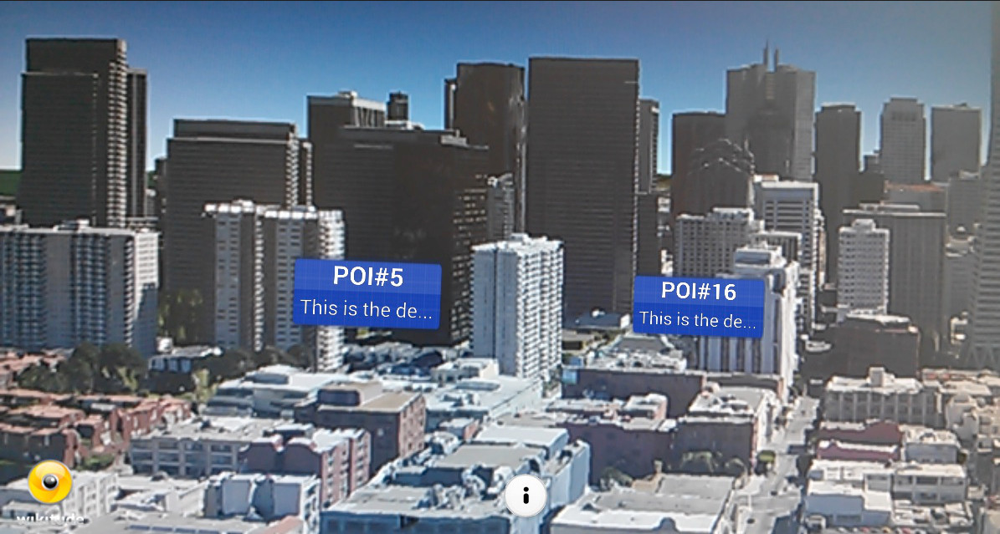
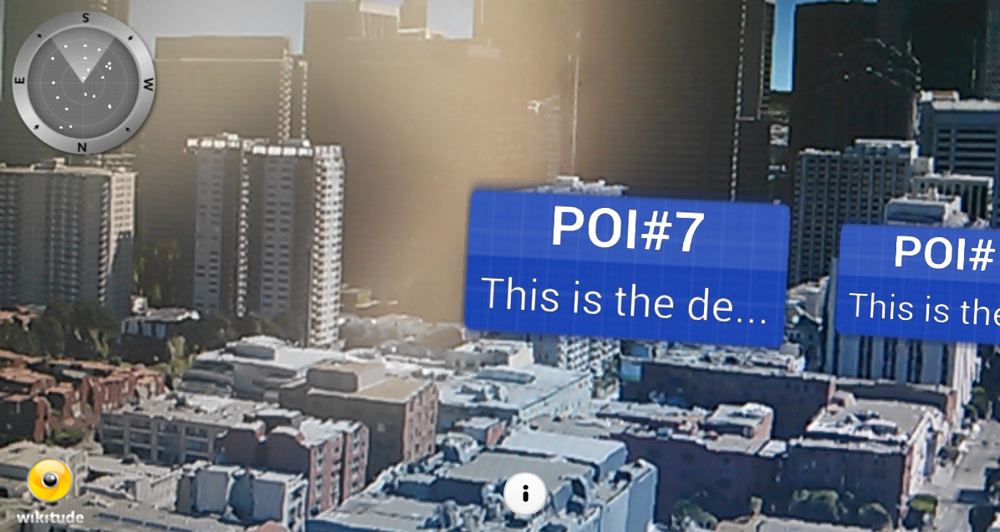
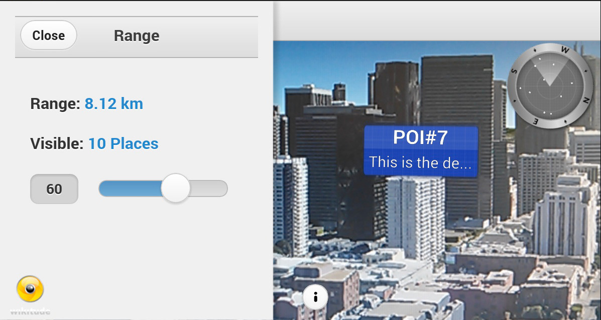
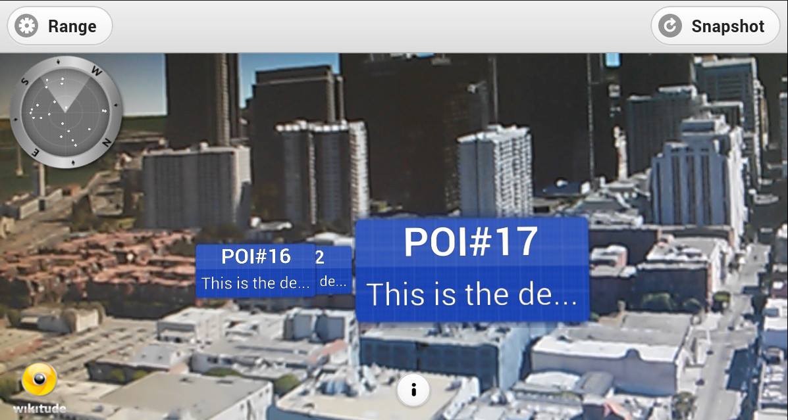
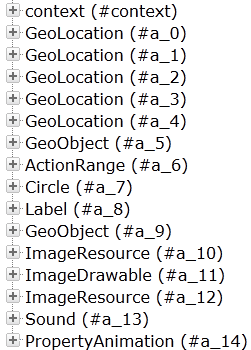
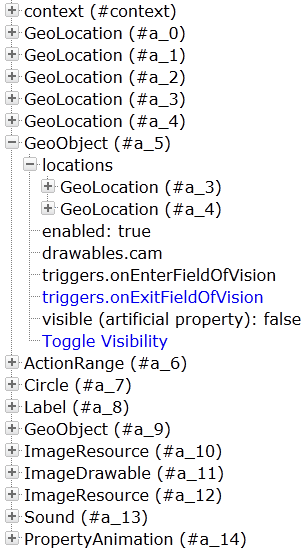
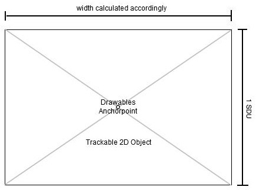

Getting started
Welcome to the Wikitude SDK. This document is designed to help you from your very first steps with the Wikitude SDK all the way through to advanced concepts and examples for developing your augmented reality project.
Recommended Usage of this Documentation
The documentation is arranged in a way to guide you through the various steps in your development process. We recommend following each of the steps outlined below and reading the documentation in the order displayed.
- Setup your project - in this section we describe the necessary steps to setup a project in a detailed guide.
View the samples - all of the included samples are complete augmented reality experiences which run in
SDKExamplesapp. Browse through this section and get an idea of what the SDK is capable of. The relevant parts of the samples are described in more detail to highlight the applied concepts and patterns. These examples are designed to help you get off to a great start with the Wikitude SDK.Viewing samples based on vision based augmented reality requires the corresponding reference images. All of them are available directly in the description of the sample or available as a collection in a PDF file, which you can either view on the screen or print.
- Write your own Architect World - this section will introduce you to best practices for your development workflow once you write your own code for your augmented reality experience.
- Get good at what you do - the Wikitude SDK comes with several tools which help you to develop more complex augmented reality experiences. This section covers how to use these tools and how they will assist you in your daily work.
The Wikitude SDK - Augmented Reality for your own app
The Wikitude SDK is a software library and framework for mobile apps used to create augmented reality experiences. The SDK supports any kind of location based use case as well as use cases which require image recognition and tracking technology (vision based augmented reality).
How to code for the Wikitude SDK
The Wikitude SDK builds heavily on web technologies (HTML, JavaScript, CSS) to allow developers to write cross platform augmented reality experiences. These augmented reality experiences are called ARchitect worlds and are basically ordinary HTML pages that can utilize the ARchitect API to create objects in augmented reality.
Integrating the Wikitude SDK into your application is done by adding the platform specific view component called ARchitectView to your applications user interface. See the setup guide for how to setup a native project and load an ARchitect World.
Get started with writing augmented reality experiences by viewing through the examples included in the SDK. Each example is explained in detail in this documentation. Additional information about the ARchitect API can be found in the included API specification.
The Wikitude Developer Portal
The Wikitude Developer Section should be your first stop when you have specific development related questions. The portal hosts a very active Developer Community Forum where Wikitude staff members are constantly assisting other developers with helpful tips and advice. A Knowledge Base helps with various questions.
Feedback and Contact
We are always interested in your feedback and suggestions how we can improve this documentation. Please use the contact form on our website or visit us on Google+ or Facebook
Setup Guide Android
Project Setup
- Create a new Android Application Project (There is also a working SampleProject bundled in this SDK, where all these steps are already made)
- Create a
libsfolders in your project root directory and copylibs/wikitudesdk.jar In Eclipse enter
Preferences->Android->Buildand ensure the optionForce error when external jars contain native librariesis unchecked
Add the following permissions to your Manifest.xml
<uses-permission android:name="android.permission.INTERNET" />
<uses-permission android:name="android.permission.ACCESS_COARSE_LOCATION" />
<uses-permission android:name="android.permission.ACCESS_FINE_LOCATION" />
<uses-permission android:name="android.permission.ACCESS_NETWORK_STATE" />
<uses-permission android:name="android.permission.ACCESS_WIFI_STATE" />
<uses-permission android:name="android.permission.ACCESS_GPS" />
<uses-permission android:name="android.permission.CAMERA" />
<uses-permission android:name="android.permission.WRITE_EXTERNAL_STORAGE" />
<uses-feature android:name="android.hardware.camera" android:required="true" />
<uses-feature android:name="android.hardware.location" android:required="true" />
<uses-feature android:name="android.hardware.sensor.accelerometer" android:required="true" />
<uses-feature android:name="android.hardware.sensor.compass" android:required="true" />
<uses-feature android:glEsVersion="0x00020000" android:required="true" />
<uses-sdk android:targetSdkVersion="19" android:minSdkVersion="9"/>- The activity holding the AR-View (called
architectViewin the following) must have setandroid:configChanges="screenSize|orientation"in theAndroidManifest.xml, for example this could look like:
<activity android:name="com.yourcompany.yourapp.YourArActivity"
android:configChanges="screenSize|orientation"/>- Enter a valid trial license key. Read this chapter on how to obtain a free trial key.
AR View in Activity
Keep in mind that the Wikitude SDK is not a native Android SDK as you know from other SDK's. The basic concept is to add an architectView to your project and notify it about lifecycle events. The architectView creates a camera surface and handles sensor events.
The experience itself, sometime referred to as ARchitect World, is implemented in JavaScript and packaged in your application's asset-folder (as in this project) or on your own server.
The experiences are written in HTML and JavaScript and call methods in Wikitude's AR-namespace (e.g. AR.GeoObject).
You have to include
<script src="architect://architect.js"></script>in your HTML files to use the AR namespace and the architectView will handle them properly. To test an ARchitect World on a desktop browser, you must include ade.js tool instead to avoid JavaScript errors and see a development console.
It is recommended to handle your augmented reality experience in a separate Activity.
Declare the architectView inside a layout XML.
E.g. Add this within FrameLayout's parent tags.
<com.wikitude.architect.ArchitectView android:id="@+id/architectView"
android:layout_width="fill_parent" android:layout_height="fill_parent"/>ArchitectView is creating a camera surface so ensure to properly release the camera in case you're using it somewhere else in your application.
Besides the rear-camera the ArchitectView also makes use of compass and accelerometer values, requires OpenGL 2.0 and at least Android 2.3.
ArchitectView.isDeviceSupported(Context context) checks wether the current device has all required hard- and software in place or not.
Note: Make AR-View only accessible to supported devices
It is very important to notify the ArchitectView about life-cycle events of the Activity.
Call architectView's onCreate(), onPostCreate(), onPause(), onResume(), onDestroy() inside your Activity's lifecycle methods.
Best practice is to define a member variable for the architectView in your Activity. Set it right after setContentViewin Activity's onCreate(), and then access architectView via member-variable later on.
this.architectView = (ArchitectView)this.findViewById( R.id.architectView );
final ArchitectConfig config = new ArchitectConfig( "" /* license key */ );
this.architectView.onCreate( config );Activity's onPostCreate() is the best place to load the AR-Experience.
this.architectView.onPostCreate();
this.architectView.load( "YOUR-AR-URL" );The architectView.load() argument is the path to the html file that defines your AR experience. It can be relative to the asset folder root or a web-url (starting with http:// or https://).
e.g. architectView.load('arexperience.html') opens the html in your project's assets-folder, whereat architectView.load('http://your-server.com/arexperience.html') loads the file from a server.
Note: You can only pass arguments to the html file when loading it via url. architectView.load('arexperience.html?myarg=1') does not work.
Location
Management of the location is important in location based augmented reality applications. Depending on the use-case location is used via GPS or network and may be updated every second or once in a while.
Although the SDKExamples project provides a basic implementation of a LocationProvider this is by far not the best location strategy available for Android.
Please use your own advanced location strategy implementation in case you have special requirements.
Android 4.4 (KitKat)
Android SDK 19 (KitKat) changes various implementations of the WebView. Please have a look at the Android 4.4 WebView Migration document by Google for details. Furthermore debugging of your ARchitect World improved a lot, have a look at the Debugging Web Apps documentation by Google for a step-by-step guide.
Supported Android Devices
Wikitude SDK is running on devices fulfilling the following requirements:
| Sensor-based AR (Geo-AR) | Image recognition and tracking | |
|---|---|---|
| Android |
|
|
Requirements for other operating systems and platforms are listed in this overview.
Supported Devices
Wikitude SDK is running on devices fulfilling the following requirements:
| Sensor-based AR (Geo-AR) | Image recognition and tracking | |
|---|---|---|
| Android |
|
|
| Epson |
|
|
| Google Glass |
|
|
| iOS |
|
|
| Vuzix |
|
|
Examples
The following examples should give you an overview of the capabilities offered by the Wikitude SDK. Each sample is capable of running without modifications on all supported platforms.
Each of the included examples is structured as following:
index.html: entry point for the experiencejs/*: includes the necessary JavaScript filescss/*: css style sheets requiredassets/*: contains images, 3D models and tracker files
Inside the js/ folder the main JavaScript file is named like the example. (the example Image Recognition has its JavaScript code in the js/imagerecognition.js file). Code which is mentioned in the description of the examples can be found in this file, if not explicitly stated otherwise.
Samples on GitHub
If you are just interested in browsing through the code of the augmented reality experience you can also find the entire source code of the samples on GitHub### Android SDK Examples
This section describes the SDK Sample project in detail and highlights the main features and use-cases of the Wikitude SDK.
The project is part of the SDK bundle and is an Android Eclipse project, ready to run on any of the supported Android devices.
Note: You cannot run Wikitude SDK project on Android Emulator due to OpenGL restrictions.
Run through the setup guide, install the sample project on your device and scroll through the sample list.
The project's asset folder contains implementation of the various ARchitect World's.
Implementation of the native Android activities is available in the src folder.
Setup
- Download latest Android SDK
- Launch ADT, which is part of the Android SDK or Eclipse with installed Android Plugin
- From the main menu bar, select
File->Import…which will open the import wizard. - Select
General->Existing Project into Workspaceand clickNext. - Choose
Select root directory, clickBrowse - Navigate to the
SDKExamplesproject folder in your filesystem. - Click
Finishto start the import. - Right click the project folder, click
PreferencesandAndroid Ensure you have very latest SDK (14+) checked in the Build Target list

Use an Android device that has all hard- and software requirements (should be similar to Samsung Galaxy S2) and enable your location services in system settings
- Enter
Settings->Applications->Developer-> checkUSB debugging - Plug in the device via USB.
- Right click the project folder again select
Run as…-Android Applicationand select the target device - The sample application is then installed onto your device
Native/JavaScript Communication
The samples mainly describe how to launch an AR experience in your Android activity - anything relevant for AR is written in the provided HTML/JS file.
Although it is highly recommended to implement logic in pure HTML and JavaScript at some point in time it makes sense to interact between native Android and the JavaScript of your AR experience.
One may for instance pass data for points of interest (POI) from native Android to JavaScript.
Define a method named newData(json) in the JavaScript file and use architectView.callJavascript(newData('" + poiDataAsJson +")') to call the method and pass over the values properly. JSON Format is the fastest way to pass bulk of information, like translations, metadata and POI information over to your JavaScript.
There are several ways to create a JSON in Android.
Sometimes events like a click in your AR experience should cause a reaction in native Android, like launching another screen when clicking a placemark or image target. To achieve that you need to register a urlListener using architectView.registerUrlListener() in the activity.
Any document.location changes to architectsdk:// will fire an event in your listener (e.g. document.location = architectsdk://YOUR-INFO). Listener is informed about the invoked url and can then react on.
Note: Missing urlListener registration will cause an HTTP error when calling document.location = architectsdk://YOUR-INFO
Image Recognition
This example shows how to recognize images in the viewfinder and overlay it with images. Furthermore it shows how to recognize multiple different images and how to react on user clicks on the overlaid elements.
For a better understanding, here are some terms that will be used in the following and other section of this documentation related to vision-based augmented reality.
Target: A target image and its associated extracted data that is used by the tracker to recognize an image.
Target collection: An archive storing a collection of targets that can be recognized by the tracker. A target collection can hold up to 1000 targets.
Tracker: The tracker analyzes the live camera image and detects the targets stored in its associated target collection. Multiple trackers can be created, however only one tracker can be active for recognition at any given time.
This sample consists of five parts
Image on Target (1/4)
With these terms in mind let's start by defining what actually should be recognized (target) and create a corresponding target collection that the tracker can use. In this case, the target collection includes the following single magazine page.
To view the sample you can use the image in this PDF on page 2
See Target Management for instructions how to create target collections which can be used in the Wikitude SDK.
This is the same process for every use of image recognition in ARchitect. You'll first need to define your targets and then create a target collection for it. Now let us have a look at the JavaScript for enabling image recognition.
// Initialize Tracker
// Important: If you replace the tracker file with your own, make sure to change the target name accordingly.
// Use a specific target name to match only a certain target or use a wildcard to match any or a certain group of targets.
this.tracker = new AR.Tracker("assets/magazine.wtc", {
onLoaded: this.worldLoaded
});
// Create overlay for page one
var imgOne = new AR.ImageResource("assets/imageOne.png");
var overlayOne = new AR.ImageDrawable(imgOne, 1, {
offsetX: -0.15,
offsetY: 0
});
var pageOne = new AR.Trackable2DObject(this.tracker, "*", {
drawables: {
cam: overlayOne
}
});First an AR.Tracker needs to be created in order to start the recognition engine. It is initialized with a URL specific to the target collection. Optional parameters are passed as object in the last argument. In this case a callback function for the onLoaded trigger is set. Once the tracker is fully loaded the function worldLoaded() is called.
The next step is to create the augmentation. In this example an image resource is created and passed to the AR.ImageDrawable. A drawable is a visual component that can be connected to an target image AR.Trackable2DObject or a geolocated object AR.GeoObject. The AR.ImageDrawable is initialized by the image and its size. Optional parameters allow for position it relative to the recognized target.
The last line combines everything by creating an AR.Trackable2DObject with the previously created tracker, the name of the image target and the drawable that should augment the recognized image.
Please note that in this case the target name is a wildcard *. Wildcards can be used to match any target defined in the target collection. If you want to match specific targets only for a particular AR.Trackable2DObject simply provide the target name as specified in the target collection.
- Upload your images to the target management tool (log-in required)
- Generate your target collection file (.wtc)
- In your code create an
AR.Trackerand load the target collection file from the previous step - Create an AR.Trackable2DObject and assign your targetName
Make sure that the
targetName used with the AR.Trackable2DObject correspond to one of the target names in your target collection. You can also use a wildcard to match any target or only a specific subset of targets. Please refer to the AR.Trackable2DObject main documentation for more information about wildcards.
Multiple Targets (2/4)
Adding multiple targets to a target collection is straightforward. Simply follow the guide at Target Management. Each target in the target collection is identified by its target name. By using this target name, it is possible to create an AR.Trackable2DObject for every target in the target collection.
To view the sample you can use the image in this PDF on page 3

// Create overlay for page two
var imgTwo = new AR.ImageResource("assets/imageTwo.png");
var overlayTwo = new AR.ImageDrawable(imgTwo, 0.5, {
offsetX: 0.12,
offsetY: -0.01
});
var pageTwo = new AR.Trackable2DObject(this.tracker, "pageTwo", {
drawables: {
cam: overlayTwo
}
});Similar to the first part, the image resource and the AR.ImageDrawable for the second overlay are created. The AR.Trackable2DObject for the second page uses the same tracker but with a different target name.
Interactivity (3/4)
The final step is to add interactivity to the image target. For this example a button is added to each target that opens a webpage.
The button is created similar to the overlay feature. An AR.ImageResource defines the look of the button and is reused for both buttons.
this.imgButton = new AR.ImageResource("assets/wwwButton.png");For each target an AR.ImageDrawable for the button is created by utilizing the helper function createWwwButton(url, options). The returned drawable is then added to the drawables.cam array on creation of the AR.Trackable2DObject.
var pageOneButton = this.createWwwButton("http://www.wikitude.com/pageone", 0.1, {
offsetX: -0.25,
offsetY: -0.25
});
var pageOne = new AR.Trackable2DObject(this.tracker, "pageOne", {
drawables: {
cam: [overlayOne, pageOneButton]
}
});As the button should be clickable the onClick trigger is defined in the options passed to the AR.ImageDrawable. In general each drawable can be made clickable by defining its onClick trigger.
createWwwButton: function createWwwButtonFn(url, size, options) {
options.onClick = function() {
AR.context.openInBrowser(url);
};
return new AR.ImageDrawable(this.imgButton, size, options);
},The function assigned to the click trigger calls AR.context.openInBrowser with the specified URL, which opens the URL in the browser.
Adding HTML content (4/4)
Using an AR.HtmlDrawable it is possible to display HTML content inside the AR scene, the same way images are displayed. In this example a weather widget is added on top of the image target to present the real-time weather in Maui, Hawaii.
In general any HTML content can be loaded by passing a relative or absolute URL. Additionally HTML content can also be passed as a string; please see the API reference for more details on how to specify the content when creating the drawable. This example uses a relative URL to the weather widget that is stored as .html file in the example's assets subfolder.
Once the content has been chosen it is important to think about the viewport the content will need in order to be laid out correctly. The viewport is the area that is available to the HTML content when it is rendered. It is independent of the actual area the AR.HtmlDrawable will need on screen when placed in the AR scene.
The viewport width and height needs to be set when constructing the AR.HtmlDrawable and should also be set as meta tag inside the HTML content that is used. This tells the HTML rendering engine to use the specified viewport size during rendering.
<meta name="viewport"
content="target-densitydpi=device-dpi, width = 320, user-scalable = 0">Make sure that the value of width is set according to the size (in pixel) the HTML content needs. It should also correspond to the viewportWidth value specified during the creation of the AR.HtmlDrawable.
Similar to viewportWidth the viewportHeight is specified to define the available pixel height during rendering of the content. If you are unsure of the pixel size of the HTML content at hand, you can use the developer tools built into modern browsers (e.g. WebInspector) to take measure.
In the code example below we are putting that all together to a working AR.HtmlDrawable. The created drawable is added to the list of AR.Trackable2DObject drawables just like any other drawable.
var weatherWidget = new AR.HtmlDrawable({
uri: "assets/weather.html"
}, 0.25, {
viewportWidth: 320,
viewportHeight: 100,
backgroundColor: "#FFFFFF",
offsetX: +0.36,
offsetY: 0.5,
horizontalAnchor: AR.CONST.HORIZONTAL_ANCHOR.RIGHT,
verticalAnchor: AR.CONST.VERTICAL_ANCHOR.TOP,
clickThroughEnabled: true,
allowDocumentLocationChanges: false,
onDocumentLocationChanged: function onDocumentLocationChangedFn(uri) {
AR.context.openInBrowser(uri);
}
});
var pageOne = new AR.Trackable2DObject(this.tracker, "pageOne", {
drawables: {
cam: [overlayOne, pageOneButton, weatherWidget, sparkles]
}
});Interaction with an AR.HtmlDrawable is controlled with the clickThroughEnabled and allowDocumentLocationChanges properties. Setting clickThroughEnabled will forward click events to the HTML content making it possible to follow links or click buttons. If the content of the HTML drawable should not change allowDocumentLocationChanges can be set to false so links are not followed. It is still possible to react on clicked links by using the onDocumentLocationChanged trigger. The example uses this trigger to open clicked links fullscreen in a browser. The result then looks like this
Bonus: Sparkles
This section adds a little bonus to the above example. Sprite sheet animations can be used to animate images similar to animated GIFs and are used in this example to add sparkles to the overlay.
A sprite sheet is an image file that contains all key frame images required for the animation. The key frame image size (width and height) is passed at creation time and must be equal for all key frame images. Key frame images will be managed in an array, starting with entry 0. The key frame image array will be filled from left to right, row by row. Any partly filled key frames at the edge of the sprites sheet will be ignored.

First the image resource is created which is used for creating the AR.AnimatedImageDrawable. Since the width/height of the sprite sheet is 512 and it carries 16 key frames, the width and height of a single image is 128. So we set 128 as the width and height of the AR.AnimatedImageDrawable.
// Sparkles
var imgSparkles = new AR.ImageResource("assets/imageSparkles.png");
var sparkles = new AR.AnimatedImageDrawable(imgSparkles, 0.25, 128, 128, {
offsetX: -0.2,
offsetY: 0.5,
rotation: 75
});To start the animation the order of the keyframes needs to be passed as array. Additionally the time each frame is displayed in ms and the loop count needs to be defined. In this case each image is displayed 100ms before it changes and a loop count of -1 plays the animation in an infinite loop.
sparkles.animate([0, 1, 2, 3, 4, 5, 6, 7, 8, 9, 10, 11, 12, 13, 14, 15], 100, -1);The last step is to add it as drawable to the AR.Trackable2DObject so it will be overlaid on the first page.
var pageOne = new AR.Trackable2DObject(this.tracker, "pageOne", {
drawables: {
cam: [overlayOne, pageOneButton, weatherWidget, sparkles]
}
});3D Models
This example shows how to augment a target image with 3D content. It starts by displaying a 3D model on a target and advances by adding displayed animations and interactivity. The last part of this sample adds snap-to-screen functionality mixed with touch and swipe gestures.
If you are not yet familiar with how to create a vision based augmented reality scene (based on image recognition and tracking), please have a look at the previous example Image Recognition.
3D content within Wikitude can only be loaded from Wikitude 3D Format files (.wt3). This is a compressed binary format for describing 3D content which is optimized for fast loading and handling of 3D content on a mobile device. You still can use 3D models from your favorite 3D modeling tools (Autodesk® Maya® or Blender) but you'll need to convert them into the wt3 file format. The Wikitude 3D Encoder desktop application (Windows and Mac) encodes your 3D source file. The Encoder can handle Autodesk® FBX® files (.fbx) and the open standard Collada (.dae) file formats for encoding to .wt3.
For more details on how to convert your 3D content please see the Wikitude 3D Encoder section. In this example the .wt3 file has already been prepared and saved to assets/car.wt3.
3D content is rendered on top of 2D objects. This limitation exists because of some SDK internal restrictions and might change in an upcoming release.
This sample consists of four parts
The following fictional print advertisement is used as target image, which will be augmented with a 3D model of the car advertised in the print ad.
3D Model on Target (1/4)
First of all create an AR.Model and pass the URL to the actual .wt3 file of the model. Additional options allow for scaling, rotating and positioning the model in the scene.
this.modelCar = new AR.Model("assets/car.wt3", {
onLoaded: this.loadingStep,
scale: {
x: 0.045,
y: 0.045,
z: 0.045
},
translate: {
x: 0.0,
y: 0.05,
z: 0.0
},
rotate: {
roll: -25
}
});In this example a function is attached to the onLoaded trigger to receive a notification once the 3D model is fully loaded. Depending on the size of the model and where it is stored (locally or remotely) it might take some time to completely load and it is recommended to inform the user about the loading time.
Similar to 2D content the 3D model is added to the drawables.cam property of an AR.Trackable2DObject.
var trackable = new AR.Trackable2DObject(this.tracker, "*", {
drawables: {
cam: [this.modelCar]
}
});This is everything that is needed to allow the 3D model appear on an image target. To adjust scaling and position of the model pass the scale and translate properties as options to the AR.Model.
To view the sample you can use the image in this PDF on page 4
Appearing Animation (2/4)
As a next step, an appearing animation is added which scales up the 3D model once the target is inside the field of vision. Creating an animation on a single property of an object is done using an AR.PropertyAnimation. Since the car model needs to be scaled up on all three axis, three animations are needed. These animations are grouped together utilizing an AR.AnimationGroup that allows them to play them in parallel.
var sx = new AR.PropertyAnimation(model, "scale.x", 0, scale, 1500, {
type: AR.CONST.EASING_CURVE_TYPE.EASE_OUT_QUAD
});
var sy = new AR.PropertyAnimation(model, "scale.y", 0, scale, 1500, {
type: AR.CONST.EASING_CURVE_TYPE.EASE_OUT_QUAD
});
var sz = new AR.PropertyAnimation(model, "scale.z", 0, scale, 1500, {
type: AR.CONST.EASING_CURVE_TYPE.EASE_OUT_QUAD
});
return new AR.AnimationGroup(AR.CONST.ANIMATION_GROUP_TYPE.PARALLEL, [sx, sy, sz]);Each AR.PropertyAnimation targets one of the three axis and scales the model from 0 to the value passed in the scale variable. An EASE_OUT_QUAD easing curve is used to create a more dynamic effect of the animation.
To get a notification once the image target is inside the field of vision the onEnterFieldOfVision trigger of the AR.Trackable2DObject is used. In the example the function appear() is attached.
appear: function appearFn () {
World.appearingAnimation.start();
}Within the appear function the previously created AR.AnimationGroup is started by calling its start() function which plays the animation once.
Interactivity (3/4)
To add more functionality, a rotating animation is added to the 3D model. It is started and paused by clicking on the button or on the 3D model.
Additionally to the 3D model an image that will act as a button is added to the image target. This can be accomplished by loading an AR.ImageResource and creating a drawable from it.
var imgRotate = new AR.ImageResource("assets/rotateButton.png");
var buttonRotate = new AR.ImageDrawable(imgRotate, 0.2, {
offsetX: 0.35,
offsetY: 0.45,
onClick: this.toggleAnimateModel
});To add the AR.ImageDrawable to the image target together with the 3D model both drawables are supplied to the AR.Trackable2DObject.
var trackable = new AR.Trackable2DObject(this.tracker, "*", {
drawables: {
cam: [this.modelCar, buttonRotate]
},
onEnterFieldOfVision: this.appear
});The rotation animation for the 3D model is created by defining an AR.PropertyAnimation for the rotate.roll property.
// Rotation Animation
this.rotationAnimation = new AR.PropertyAnimation(this.modelCar, "rotate.roll", -25, 335, 10000);The drawables are made clickable by setting their onClick triggers. Click triggers can be set in the options of the drawable when the drawable is created. Thus, when the 3D model onClick: this.toggleAnimateModel is set in the options it is then passed to the AR.Model constructor. Similar the button's onClick: this.toggleAnimateModel trigger is set in the options passed to the AR.ImageDrawable constructor. toggleAnimateModel() is therefore called when the 3D model or the button is clicked.
Inside the toggleAnimateModel() function, it is checked if the animation is running and decided if it should be started, resumed or paused.
toggleAnimateModel: function toggleAnimateModelFn() {
if (!World.rotationAnimation.isRunning()) {
if (!World.rotating) {
World.rotationAnimation.start(-1);
World.rotating = true;
} else {
World.rotationAnimation.resume();
}
} else {
World.rotationAnimation.pause();
}
return false;
}Starting an animation with .start(-1) will loop it indefinitely.
Snap to Screen (4/4)
To finish things up, the snap to screen feature is added so that the 3D model can be explored in a more immersive way. Snap to screen will bring the drawables, attached to a AR.Trackable2DObject, out of the augmented reality scene and directly onto the screen. Once snapped, the drawables will stay on the screen as long as they are not set back into the augmented reality context. Thereby users can explore content even if they don't look at the target image.
The snap position on the screen is defined through a div element. During the AR.Trackable2DObject creation, the div is passed as a additional option. In this example a div with id snapContainer is used.
this.trackable = new AR.Trackable2DObject(this.tracker, "*", {
drawables: {
...
},
snapToScreen: {
snapContainer: document.getElementById('snapContainer')
},
...
});Snapping is then enabled through an additional button. The button is created and setup just the same way as the rotate button. The only difference is that the onClick function of the newly created button is pointing to a different function.
toggleSnapping: function toggleSnappingFn() {
World.snapped = !World.snapped;
World.trackable.snapToScreen.enabled = World.snapped;
if ( !World.snapped ) {
World.applyLayout(World.layout.snapped);
World.addInteractionEventListener();
} else {
World.applyLayout(World.layout.normal);
World.removeInteractionEventListener();
}
}To enable snapping, set the AR.Trackable2DObject property snapToScreen.enabled accordingly (either true or false). Based on the current snapping state, the drawables are positioned and scaled differently and event listeners are added or removed so that the 3D model can only be modified while it is snapped.
In the sample the 3D model can be rotated and scaled through touch and gesture events once it is snapped to the screen. To apply the new rotation and scale values, the JavaScript events touchmoved and gesturechange are used. Inside these listener functions scale and rotation values are calculated and applied to the 3D model.
Point Of Interest (POI)
The Point Of Interest (POI) example series will show how you can create a marker that is placed at a specific geolocation. The example is split into four different parts that depend on each other. You will have a complete and reusable marker at the end of the series which has a title, description, a selected and an idle state which animates smoothly from one to another.
This sample consists of four parts
POI at Location (1/4)
The first part of the series will present an image at a geolocation. To do so, we will use the AR.context.onLocationChanged() callback to get the current location. After the location has been retrieved, we will use it to place an AR.ImageDrawable there.
All JavaScript code can be found in the file poiatlocation.js.
The example Image Recognition already explained how images are loaded and displayed in the augmented reality view. This sample loads an AR.ImageResource when the World variable was defined. It will be reused for each marker that we will create afterwards.
The last line of the poiatlocation.js shows how to set a custom AR.context.onLocationChanged callback.
AR.context.onLocationChanged = World.onLocationChanged;The custom function World.onLocationChanged checks with the flag World.initiallyLoadedData if the function was already called. There is also a possibility to set AR.context.onLocationChanged to null. In this case the function will not be called anymore and no further location updates will be received.
On the first call of World.onLocationChanged an object that contains geo information will be created which will be later used to create a marker using the World.loadPoisFromJsonData function.
locationChanged: function locationChangedFn(lat, lon, alt, acc) {
// request data if not already present
if (!World.initiallyLoadedData) {
var poiData = {
"id": 1,
"longitude": (lon + (Math.random() / 5 - 0.1)),
"latitude": (lat + (Math.random() / 5 - 0.1)),
"altitude": 100.0
};
World.loadPoisFromJsonData(poiData);
World.initiallyLoadedData = true;
}
}The loadPoisFromJsonData function creates an AR.ImageResource which is later used as an image for the marker.
// start loading marker assets
World.markerDrawable_idle = new AR.ImageResource("assets/marker_idle.png");For creating the marker a new object AR.GeoObject will be created at the specified geolocation. An AR.GeoObject connects one or more AR.GeoLocations with multiple AR.Drawables. The AR.Drawables can be defined for multiple targets. A target can be the camera, the radar or a direction indicator. Both the radar and direction indicators will be covered in more detail in later examples.
// create the marker
var markerLocation = new AR.GeoLocation(poiData.latitude, poiData.longitude, poiData.altitude);
var markerImageDrawable_idle = new AR.ImageDrawable(markerDrawable_idle, 2.5, {
zOrder: 0,
opacity: 1.0
});
// create GeoObject
var markerObject = new AR.GeoObject(markerLocation, {
drawables: {
cam: [markerImageDrawable_idle]
}
});Finally the status message is updated as a user feedback that everything was loaded properly:
World.updateStatusMessage('1 place loaded');POI with Label (2/4)
The second part adds a title and description label to our marker object and covers more drawable related options.

All JavaScript changes are in poiwithlabel.js. Note that the file is only renamed but its content is mostly identical to poiatlocation.js.
The locationChanged function adds a description and a title to the marker:
var poiData = {
"id": 1,
"longitude": (lon + (Math.random() / 5 - 0.1)),
"latitude": (lat + (Math.random() / 5 - 0.1)),
"altitude": 100.0,
"description": "This is the description of POI#1",
"title": "POI#1"
};Marker class (see marker.js). Parts of the code are moved from loadPoisFromJsonData to the Markerclass: the creation of the AR.GeoLocation, the creation of the AR.ImageDrawable and the creation of the AR.GeoObject. Then instantiate the Marker in the function loadPoisFromJsonData:
js
// create the marker
var marker = new Marker(poiData);
There are two major points that need to be considered while drawing multiple AR.Drawables at the same location. It has to be defined which one is before or behind another drawable (rendering order) and if they need a location offset. For both scenarios, ARchitect has some functionality to adjust the drawable behavior.
To position the AR.Label in front of the background, the background drawable(AR.ImageDrawable2D) receives a zOrder of 0. Both labels have a zOrder of 1. This way it is guaranteed that the labels will be drawn in front of the background drawable.
Assuming both labels will be drawn on the same geolocation connected with the same AR.GeoObject they will overlap. To adjust their position change the offsetX and offsetY property of an AR.Drawable2D object. The unit for offsets are SDUs. See this chapter for more information about SDUs.
In the following both AR.Labels are initialized and positioned. Note that they are added to the cam property of the AR.GeoObject the same way as an AR.ImageDrawable.
function Marker(poiData) {
this.poiData = poiData;
var markerLocation = new AR.GeoLocation(poiData.latitude, poiData.longitude, poiData.altitude);
this.markerDrawable_idle = new AR.ImageDrawable(World.markerDrawable_idle, 2.5, {
zOrder: 0,
opacity: 1.0
});
this.titleLabel = new AR.Label(poiData.title.trunc(10), 1, {
zOrder: 1,
offsetY: 0.55,
style: {
textColor: '#FFFFFF',
fontStyle: AR.CONST.FONT_STYLE.BOLD
}
});
this.descriptionLabel = new AR.Label(poiData.description.trunc(15), 0.8, {
zOrder: 1,
offsetY: -0.55,
style: {
textColor: '#FFFFFF'
}
});
// Changed:
this.markerObject = new AR.GeoObject(markerLocation, {
drawables: {
cam: [this.markerDrawable_idle, this.titleLabel, this.descriptionLabel]
}
});
return this;
}Additionally a function which truncates a text string that is longer than the given length is added. This function is used to shorten titles or descriptions.
String.prototype.trunc = function(n) {
return this.substr(0, n - 1) + (this.length > n ? '...' : '');
};Multiple POIs (3/4)
The third example consist of two parts. The first part shows how to create multiple markers and in the second part an implementation of a marker selection is described.

For creating multiple markers change the class World. Add a function requestDataFromLocal with the geo information as parameters (latitude, longitude) which are used for creating different poi data to a random location in the user's vicinity. The new function is called from locationChanged instead of calling loadPoisFromJsonData like in the previous example:
World.requestDataFromLocal(lat, lon);The function loadPoisFromJsonData will be called within the new function requestDataFromLocal after the POI data was created:
// request POI data
requestDataFromLocal: function requestDataFromLocalFn(centerPointLatitude, centerPointLongitude) {
var poisToCreate = 20;
var poiData = [];
for (var i = 0; i < poisToCreate; i++) {
poiData.push({
"id": (i + 1),
"longitude": (centerPointLongitude + (Math.random() / 5 - 0.1)),
"latitude": (centerPointLatitude + (Math.random() / 5 - 0.1)),
"description": ("This is the description of POI#" + (i + 1)),
"altitude": "100.0",
"name": ("POI#" + (i + 1))
});
}
World.loadPoisFromJsonData(poiData);
}Since the argument of loadPoisFromJsonData is used as an array and not like a single object as before some adaptations are necessary. The POI information array which is delivered as an argument in the function loadPoisFromJsonData is used to create poiData objects. In a for loop iterate through all the poi information objects. For each object create a new object singlePoi. To create multiple markers new Marker(poiData) can be called multiple times with different locations, titles and descriptions as defined in the poiData object. Now create the Marker objects and store them in an array markerList which is defined as a member variable in the World class. The markerList array is needed for selection/deselection of markers and will be described later in this example. Finally the status message is updated with the number of POIs loaded.
// called to inject new POI data
loadPoisFromJsonData: function loadPoisFromJsonDataFn(poiData) {
// empty list of visible markers
World.markerList = [];
// start loading marker assets
World.markerDrawable_idle = new AR.ImageResource("assets/marker_idle.png");
// loop through POI-information and create an AR.GeoObject (=Marker) per POI
for (var currentPlaceNr = 0; currentPlaceNr < poiData.length; currentPlaceNr++) {
var singlePoi = {
"id": poiData[currentPlaceNr].id,
"latitude": parseFloat(poiData[currentPlaceNr].latitude),
"longitude": parseFloat(poiData[currentPlaceNr].longitude),
"altitude": parseFloat(poiData[currentPlaceNr].altitude),
"title": poiData[currentPlaceNr].name,
"description": poiData[currentPlaceNr].description
};
World.markerList.push(new Marker(singlePoi));
}
World.updateStatusMessage(currentPlaceNr + ' places loaded');
}At this point the implementation for displaying multiple markers is finished. Let's have a look on how to change the marker background image after it was selected and handle the different selection states.
A second AR.ImageDrawable is defined in marker.js.
To react on user interaction, an onClick property can be set for each AR.Drawable. The property is a function which will be called each time the user taps on the drawable. The following snippet shows the adapted AR.ImageDrawable creation.
this.markerDrawable_idle = new AR.ImageDrawable(World.markerDrawable_idle, 2.5, {
zOrder: 0,
opacity: 1.0,
onClick: Marker.prototype.getOnClickTrigger(this)
});The function called on each tap is returned from the following helper function defined in marker.js. The function returns a function which checks the selected state with the help of the variable isSelected and executes the appropriate function. The clicked marker is passed as an argument.
Marker.prototype.getOnClickTrigger = function(marker) {
return function() {
if (marker.isSelected) {
Marker.prototype.setDeselected(marker);
} else {
Marker.prototype.setSelected(marker);
try {
World.onMarkerSelected(marker);
} catch (err) {
alert(err);
}
}
};
};The setSelected and setDeselected functions are prototype Marker functions.
Both functions perform the same steps but inverted, hence only one function (setSelected) is covered in detail. Three steps are necessary to select the marker. First the state will be set appropriately. Second the background drawable will be enabled and the standard background disabled. This is done by setting the opacity property to 1.0 for the visible state and to 0.0 for an invisible state. Third the onClick function is set only for the background drawable of the selected marker.
Marker.prototype.setSelected = function(marker) {
marker.isSelected = true;
marker.markerDrawable_idle.opacity = 0.0;
marker.markerDrawable_selected.opacity = 1.0;
marker.markerDrawable_idle.onClick = null;
marker.markerDrawable_selected.onClick = Marker.prototype.getOnClickTrigger(marker);
};To be able to deselect a marker while the user taps on the empty screen, the World object holds an array that contains each marker.
World.markerList.push( new Marker(poiData) );To detect clicks where no drawable was hit set a custom function on AR.context.onScreenClick where the currently selected marker is deselected.
onScreenClick: function onScreenClickFn() {
if (World.currentMarker) {
World.currentMarker.setDeselected(World.currentMarker);
}
}Selecting POIs (4/4)

The last part describes the concepts behind AR.PropertyAnimations and AR.AnimationGroups. It also explains how direction indicators can be used to visualize selected objects that are currently not visible in the viewfinder.
With AR.PropertyAnimations you are able to animate almost any property of ARchitect objects. This sample will animate the opacity of both background drawables so that one will fade out while the other one fades in. The scaling is animated too. The marker size changes over time so the labels need to be animated too in order to keep them relative to the background drawable. AR.AnimationGroups are used to synchronize all animations in parallel or sequentially.
In marker.js there are two new variables declared. They hold a reference to an AR.AnimationGroup that is used to either start or stop the animations.
this.animationGroup_idle = null;
this.animationGroup_selected = null;The functions setSelected and setDeselected in marker.js have to be adapted. Again only the changes in setSelected are explained.
There are two types of AR.AnimationGroups. Parallel animations are running at the same time, sequential animations are played one after another. This example uses a parallel AR.AnimationGroup.
if (marker.animationGroup_selected === null) {
var hideIdleDrawableAnimation = new AR.PropertyAnimation(marker.markerDrawable_idle, "opacity", null, 0.0, kMarker_AnimationDuration_ChangeDrawable);
var showSelectedDrawableAnimation = new AR.PropertyAnimation(marker.markerDrawable_selected, "opacity", null, 0.8, kMarker_AnimationDuration_ChangeDrawable);
var idleDrawableResizeAnimation = new AR.PropertyAnimation(marker.markerDrawable_idle, 'scaling', null, 1.2, kMarker_AnimationDuration_Resize, new AR.EasingCurve(AR.CONST.EASING_CURVE_TYPE.EASE_OUT_ELASTIC, {
amplitude: 2.0
}));
var selectedDrawableResizeAnimation = new AR.PropertyAnimation(marker.markerDrawable_selected, 'scaling', null, 1.2, kMarker_AnimationDuration_Resize, new AR.EasingCurve(AR.CONST.EASING_CURVE_TYPE.EASE_OUT_ELASTIC, {
amplitude: 2.0
}));
var titleLabelResizeAnimation = new AR.PropertyAnimation(marker.titleLabel, 'scaling', null, 1.2, kMarker_AnimationDuration_Resize, new AR.EasingCurve(AR.CONST.EASING_CURVE_TYPE.EASE_OUT_ELASTIC, {
amplitude: 2.0
}));
var descriptionLabelResizeAnimation = new AR.PropertyAnimation(marker.descriptionLabel, 'scaling', null, 1.2, kMarker_AnimationDuration_Resize, new AR.EasingCurve(AR.CONST.EASING_CURVE_TYPE.EASE_OUT_ELASTIC, {
amplitude: 2.0
}));
marker.animationGroup_selected = new AR.AnimationGroup(AR.CONST.ANIMATION_GROUP_TYPE.PARALLEL, [hideIdleDrawableAnimation, showSelectedDrawableAnimation, idleDrawableResizeAnimation, selectedDrawableResizeAnimation, titleLabelResizeAnimation, descriptionLabelResizeAnimation]);
}Launch the AR.AnimationGroup using the start function.
marker.animationGroup_selected.start();In the function Marker.prototype.getOnClickTrigger the selection functions are only called if no animation is currently running:
if (!Marker.prototype.isAnyAnimationRunning(marker)) {
if (marker.isSelected) {
Marker.prototype.setDeselected(marker);
} else {
Marker.prototype.setSelected(marker);
try {
World.onMarkerSelected(marker);
} catch (err) {
alert(err);
}
}
} else {
AR.logger.debug('a animation is already running');
}
}Create an AR.ImageResource referencing the image that should be displayed for a direction indicator. Then create an AR.ImageDrawable using the AR.ImageResource. Set options regarding the offset and anchor of the image so that it will be displayed correctly on the edge of the screen.
this.directionIndicatorDrawable = new AR.ImageDrawable(World.markerDrawable_directionIndicator, 0.5, {
enabled: false
});The last step is to define the AR.ImageDrawable as an indicator target on the marker AR.GeoObject. The direction indicator is displayed automatically when necessary. AR.Drawable subclasses (e.g. AR.Circle) can be used as direction indicators.
this.markerObject = new AR.GeoObject(markerLocation, {
drawables: {
cam: [ this.markerDrawable_idle,
this.markerDrawable_selected,
this.titleLabel,
this.descriptionLabel
],
indicator: this.directionIndicatorDrawable
}
});Retrieving POI Data
There are several ways to request and work with POI detail information in an ARchitect World. Depending on your application and use case, one might fit better than the other.
This sample consists of three parts
From Application Model (1/3)
Besides loading data from assets it is also possible to load data from a database, or to create it in native code. Use the platform common way to create JSON Objects of your data and use architectView.callJavaScript() to pass them to the ARchitect World's JavaScript.
Have a look at SampleCamContentFromNativeActivity.java to get a better understanding of how data can be injected to JavaScript.
From a Local Resource (2/3)
In case the data of your ARchitect World is static the content should be stored within the application.
Create a JavaScript file (e.g. myJsonData.js) where a globally accessible variable is defined:
var myJsonData = …[YOUR-JSON-DATA]Include the JavaScript in the ARchitect Worlds HTML by adding <script src="js/myJsonData.js"/> to make POI information available anywhere in your JavaScript.
// request POI data
requestDataFromLocal: function requestDataFromLocalFn(lat, lon) {
World.loadPoisFromJsonData(myJsonData);
}Note: This sample uses static POI data and overwrites latitude and longitude values using Helper.bringPlacesToUser, you must remove this line to avoid this.
From a Webservice (3/3)
JQuery provides a number of tools to load data from a remote origin. It is highly recommended to use the JSON format for POI information. Requesting and parsing is done in a few lines of code.
Use e.g. AR.context.onLocationChanged = World.locationChanged; to define the method invoked on location updates. In this sample POI information is requested after the very first location update. Note: You may set AR.context.onLocationChanged = null afterwards to no longer receive location updates in World.locationChanged.
It is recommended to store server information separately.
// holds server information
var ServerInformation = {
// sample service returning dummy POIs
POIDATA_SERVER: "http://example.wikitude.com/GetSamplePois/",
POIDATA_SERVER_ARG_LAT: "lat",
POIDATA_SERVER_ARG_LON: "lon",
POIDATA_SERVER_ARG_NR_POIS: "nrPois"
};Ensure that the server returns valid JSON and it is escaped properly (e.g. special characters in POI name…).
The server response is passed over to World.loadPoisFromJsonData(poiData), where the creation of markers and their camera representation is defined.
// location updates
locationChanged: function locationChangedFn(lat, lon, alt, acc) {
/* Request data from server only once*/
if (!World.alreadyRequestedData) {
World.requestDataFromServer(lat, lon);
World.alreadyRequestedData = true;
}
},
// request POI data
requestDataFromServer: function requestDataFromServerFn(lat, lon) {
// set helper var to avoid requesting places while loading
World.isRequestingData = true;
World.updateStatusMessage('Requesting places from web-service');
// server-url to JSON content provider
var serverUrl = ServerInformation.POIDATA_SERVER + "?" + ServerInformation.POIDATA_SERVER_ARG_LAT + "=" + lat + "&" + ServerInformation.POIDATA_SERVER_ARG_LON + "=" + lon + "&" + ServerInformation.POIDATA_SERVER_ARG_NR_POIS + "=20";
var jqxhr = $.getJSON(serverUrl, function(data) {
World.loadPoisFromJsonData(data);
})
.error(function(err) {
World.updateStatusMessage("Invalid web-service response.", true);
World.isRequestingData = false;
})
.complete(function() {
World.isRequestingData = false;
});
}Browsing POIs
Displaying numerous POIs in the camera is a challenge. How many POIs should be offered? How to deal with POIs in same direction? What is the maximum range to show POIs and how to display a long description? The following example cover frequently asked questions related to the POI browser use case and consists of five parts plus a bonus section
- Presenting Details
- POI and AR Radar
- Limiting Visible POIs
- Reloading POI Data
- Native Detail Screen
- Capture Screen Bonus
Presenting Details (1/6)
POIs usually have a name and sometimes a quite long description. Depending on your content type you may e.g. display a marker with its name and cropped description but allow the user to get more information after selecting it.

jQuery Mobile is an easy way to create appealing user interfaces for mobile devices. It takes the "write less, do more" mantra to the next level: Instead of writing unique apps for each mobile device or OS, the jQuery mobile framework allows you to design a single highly-branded web site or application that will work on all popular smartphones, tablets, and desktop platforms (quote from their website). We recommend to use jQuery mobile for the implementation of the UI in the augmented reality view. It is well documented and can even be bundled into the app or hosted on your own web server.
In this sample a POI detail panel appears when pressing a cam-marker (the blue box with title & description), compare index.html in the sample's directory.
<!-- panel containing POI detail information -->
<div data-role="panel" id="panel-poidetail" data-position="right" data-display="overlay" style="background-color:#F0F0F0;" data-theme="c">
<!-- header with "close" button -->
<div data-role="header" data-theme="c">
<h1>Details</h1>
<a href="#header" data-rel="close">Close</a>
</div>
<!-- content of POI detail page, you may also add thumbnails etc. here if you like -->
<div data-role="content">
<!-- title -->
<h3 id="poi-detail-title"></h3>
<!-- description -->
<h4 id="poi-detail-description"></h4>
<!-- distance -->
<h4>Distance: <a id="poi-detail-distance"></a></h4>
</div>When selecting a marker the content shown in the POI detail div is updated. At the same time the panel is animated from right to left.
To deselect the marker the panelbeforeclose event is used, compare presentingPoiDetails.js
onMarkerSelected: function onMarkerSelectedFn(marker) {
World.currentMarker = marker;
// update panel values
$("#poi-detail-title").html(marker.poiData.title);
$("#poi-detail-description").html(marker.poiData.description);
var distanceToUserValue = (marker.distanceToUser > 999) ? ((marker.distanceToUser / 1000).toFixed(2) + " km") : (Math.round(marker.distanceToUser) + " m");
$("#poi-detail-distance").html(distanceToUserValue);
// show panel
$("#panel-poidetail").panel("open", 123);
$("#panel-poidetail").on("panelbeforeclose", function(event, ui) {
World.currentMarker.setDeselected(World.currentMarker);
});POI and AR Radar (2/6)
It is recommended to give the user a hint where places are located in the user's vicinity. The easiest way to provide orientation assistance is an AR.Radar element. Every AR.GeoObject (e.g. a cam marker) can have a representation in the radar element, usually indicated by a small dot.

The representation of an AR.GeoObject in the radar is defined in its drawables set (second argument of AR.GeoObject constructor). Once drawables.radar is set the object is also shown on the radar e.g. as an AR.Circle, compare marker.js:
this.radarCircle = new AR.Circle(0.03, {
horizontalAnchor: AR.CONST.HORIZONTAL_ANCHOR.CENTER,
opacity: 0.8,
style: {
fillColor: "#ffffff"
}
});
this.radardrawables = [];
this.radardrawables.push(this.radarCircle);Additionally create circles with a different color for the selected state, compare marker.js:
this.radarCircleSelected = new AR.Circle(0.05, {
horizontalAnchor: AR.CONST.HORIZONTAL_ANCHOR.CENTER,
opacity: 0.8,
style: {
fillColor: "#0066ff"
}
});
this.radardrawablesSelected = [];
this.radardrawablesSelected.push(this.radarCircleSelected);
this.markerObject = new AR.GeoObject(markerLocation, {
drawables: {
cam: [ this.markerDrawable_idle,
this.markerDrawable_selected,
this.titleLabel,
this.descriptionLabel ],
indicator: this.directionIndicatorDrawable,
radar: this.radardrawables
}
});To highlight a selected marker in the radar update the drawables in the function


Marker.prototype.setSelected and Marker.prototype.setDeselected, compare marker.js:
marker.markerObject.drawables.radar = marker.radardrawablesSelected;
[...]
marker.markerObject.drawables.radar = marker.radardrawables;The position of the radar and its size are defined using a DOM element. In our example a div element with id radarContainer, compare index.html:
<div class="radarContainer_left" id="radarContainer"></div>The size and position of the radar is defined in a css class, see poi-radar.css:
/* position of POI-radar*/
.radarContainer_left {
position:absolute;
top:0px;
left:0px;
width:100px;
height:100px;
}We advise you to use an absolute position for the element which will be referred to the radar container. Keep in mind: In case the DOM element is updated on the fly via jQuery or responsive design use AR.radar.notifyUpdateRadarPosition(); to force radar position/size updates, otherwise the very first position/size will be used.
The radar itself can be customized and should be implemented as a separate component in your JavaScript code, compare radar.js.
var PoiRadar = {
hide: function hideFn() {
AR.radar.enabled = false;
},
show: function initFn() {
// the div defined in the index.htm
AR.radar.container = document.getElementById("radarContainer");
// set the back-ground image for the radar
AR.radar.background = new AR.ImageResource("assets/radar_bg.png");
// set the north-indicator image for the radar
// (not necessary if you don't want to display a north-indicator)
AR.radar.northIndicator.image = new AR.ImageResource("assets/radar_north.png");
// center of north indicator and radar-points in the radar asset,
// usually center of radar is in the exact middle of the background,
// meaning 50% X and 50% Y axis --> 0.5 for centerX/centerY
AR.radar.centerX = 0.5;
AR.radar.centerY = 0.5;
AR.radar.radius = 0.3;
AR.radar.northIndicator.radius = 0.0;
AR.radar.enabled = true;
},
updatePosition: function updatePositionFn() {
if (AR.radar.enabled) {
AR.radar.notifyUpdateRadarPosition();
}
},
// you may define some custom action when user pressed radar,
// e.g. display distance, custom filtering etc.
clickedRadar: function clickedRadarFn() {
alert("Radar Clicked");
},
setMaxDistance: function setMaxDistanceFn(maxDistanceMeters) {
AR.radar.maxDistance = maxDistanceMeters;
}
};Call the PoiRadar.show function to activate the radar component. You may even define a click action if requested, compare addingRadar.js:
// show radar & set click-listener
PoiRadar.show();
$('#radarContainer').unbind('click');
$("#radarContainer").click(PoiRadar.clickedRadar);Limiting Visible POIs (3/6)
Users are sometimes only interested to see POIs within a certain range. This sample provides an additional button in the titlebar button to allow users to change the range of interest.

First of all add a button in the titlebar
index.html
<!-- header of UI holding feature buttons -->
<div id ="header-status" data-role="header" data-position="fixed" data-theme="c">
<a href="javascript: World.showRange();" data-icon="gear" data-inline="true" data-mini="true">Range</a>
<h1></h1>
</div>Afterwards define the panel layout for distance range. In this case the current range in meters and the number of visible POIs is shown in the panel.
index.html
<!-- range panel -->
<div data-role="panel" id="panel-distance" data-position="left" data-display="overlay" style="background-color:#F0F0F0;" data-theme="c">
<!-- header with close button -->
<div data-role="header" data-theme="c">
<h1>Range</h1>
<a href="#header" data-rel="close">Close</a>
</div>
<!-- distance information, calculated/updated in code -->
<div data-role="content">
<!-- Range in m/km-->
<h4> Range: <a id="panel-distance-value"></a></h4>
<!-- Amount of visible places -->
<h4> Visible: <a id="panel-distance-places"></a></h4>
<!-- default slider -->
<input id="panel-distance-range" type="range" data-highlight="true" name="rangeSlider" min="0" max="100" value="100" data-show-value="false" step="5" data-popup-enabled="false">
</div>
</div>The function World.updateRangeValues is executed every time a user changes the slider value.
Besides proper calculation of the maximum distance and total number of visible places AR.context.scene.cullingDistance and PoiRadar.setMaxDistance are executed to update rendering of markers and drawables in the radar, compare limitingRange.js
// updates values show in "range panel"
updateRangeValues: function updateRangeValuesFn() {
// get current slider value (0..100);
var slider_value = $("#panel-distance-range").val();
// max range relative to the maximum distance of all visible places
var maxRangeMeters = Math.round(World.getMaxDistance() * (slider_value / 100));
// range in meters including metric m/km
var maxRangeValue = (maxRangeMeters > 999) ? ((maxRangeMeters / 1000).toFixed(2) + " km") : (Math.round(maxRangeMeters) + " m");
// number of places within max-range
var placesInRange = World.getNumberOfVisiblePlacesInRange(maxRangeMeters);
// update UI labels accordingly
$("#panel-distance-value").html(maxRangeValue);
$("#panel-distance-places").html((placesInRange != 1) ? (placesInRange + " Places") : (placesInRange + " Place"));
// update culling distance, so only places within given range are rendered
AR.context.scene.cullingDistance = Math.max(maxRangeMeters, 1);
// update radar's maxDistance so radius of radar is updated too
PoiRadar.setMaxDistance(Math.max(maxRangeMeters, 1));
},
// returns number of places with same or lower distance than given range
getNumberOfVisiblePlacesInRange: function getNumberOfVisiblePlacesInRangeFn(maxRangeMeters) {
// sort markers by distance
World.markerList.sort(World.sortByDistanceSorting);
// loop through list and stop once a placemark is out of range ( -> very basic implementation )
for (var i = 0; i < World.markerList.length; i++) {
if (World.markerList[i].distanceToUser > maxRangeMeters) {
return i;
}
};
// in case no placemark is out of range -> all are visible
return World.markerList.length;
},The position of the radar component can be updated using another CSS style (using e.g. removeClass and addClass of jQuery) and calling PoiRadar.updatePosition();. In this sample the radar element moves to the right when the distance panel. Compare limitingRange.js
handlePanelMovements: function handlePanelMovementsFn() {
$("#panel-distance").on("panelclose", function(event, ui) {
$("#radarContainer").addClass("radarContainer_left");
$("#radarContainer").removeClass("radarContainer_right");
PoiRadar.updatePosition();
});
$("#panel-distance").on("panelopen", function(event, ui) {
$("#radarContainer").removeClass("radarContainer_left");
$("#radarContainer").addClass("radarContainer_right");
PoiRadar.updatePosition();
});
},The World.showRange function is executed when a user presses the Range button.
// display range slider
showRange: function showRangeFn() {
if (World.markerList.length > 0) {
// update labels on every range movement
$('#panel-distance-range').change(function() {
World.updateRangeValues();
});
World.updateRangeValues();
World.handlePanelMovements();
// open panel
$("#panel-distance").trigger("updatelayout");
$("#panel-distance").panel("open", 1234);
} else {
// no places are visible, because the are not loaded yet
World.updateStatusMessage('No places available yet', true);
}
}Reloading POI Data (4/6)
You may need to reload POI information because of user movements or manually for various reasons. In this example POIs are reloaded when user presses the refresh button. The button is defined in index.html and calls World.reloadPlaces() on click.
<a href="javascript: World.reloadPlaces()" data-icon="refresh" >Reload</a>The implementation of World.reloadPlaces() is part of the ARchitect World (reloadingPois.js) and executes World.requestDataFromServer which retrieves data according to the user's current location from a web service.
Sidenote: In certain circumstances your web service may not be available or other connection issues can occur. To notify the user about connection problems a status message is updated, In your own implementation you may e.g. use an info popup or similar.
var World = {
[…]
// reload places from content source
reloadPlaces: function reloadPlacesFn() {
if (!World.isRequestingData) {
if (World.userLocation) {
World.requestDataFromServer(World.userLocation.latitude,
World.userLocation.longitude);
} else {
World.updateStatusMessage('Unknown user-location.', true);
}
} else {
World.updateStatusMessage('Already requesting places...', true);
}
}
[…]
}Displaying Native Detail Screen (5/6)
It may make sense to display POI details in your native style. In this sample a very simple native screen opens when user presses the 'More' button in HTML. This demoes the interaction between JavaScript and native code.

A More button is added to index.html which calls the function World.onPoiDetailMoreButtonClicked.
<!-- more button-->
<a href="javascript: World.onPoiDetailMoreButtonClicked();"
data-role="button" data-icon="arrow-r" data-iconpos="right" data-inline="true">
More
</a>World.onPoiDetailMoreButtonClicked is implemented in nativePoiDetail.js and executes document.location = architectsdk://.... The urlListener of the native project intercepts this call and parses the arguments. This is the only way to pass information from JavaScript to your native code. Ensure to properly encode and decode arguments.
var World = {
[…]
// user clicked "More" button in POI-detail panel -> fire event to open native screen
onPoiDetailMoreButtonClicked: function onPoiDetailMoreButtonClickedFn() {
var currentMarker = World.currentMarker;
var architectSdkUrl = "architectsdk://markerselected?id=" +
encodeURIComponent(currentMarker.poiData.id) +
"&title=" +
encodeURIComponent(currentMarker.poiData.title) +
"&description=" +
encodeURIComponent(currentMarker.poiData.description);
document.location = architectSdkUrl;
}
[…]
}Please have a look at the this section which describes the custom url scheme native part.
Capture Screen Bonus (6/6)
This sample shows you how to use the function captureScreen to share a snapshot with your friends. Concept of interaction between JavaScript and native code is same as in the POI Detail page sample but the urlListener now handles picture sharing instead. The "Snapshot"-button is on top right in the title bar. Once clicked the current screen is captured and user is prompted to share it.
<!-- header of UI holding feature buttons -->
<div id ="header-status" data-role="header" data-position="fixed" data-theme="c">
<a href="javascript: World.showRange();" data-icon="gear" data-inline="true" data-mini="true">Range</a>
<a href="javascript: World.captureScreen()" data-icon="refresh" >Snapshot</a>
<h1></h1>
</div>Handling of picture sharing is done in native code.
// tell native (urlListener) that user pressed 'Snapshot' button
captureScreen: function captureScreenFn() {
document.location = "architectsdk://button?action=captureScreen";
},## Browsing POIs Android
Displaying Native Detail Screen (5/6)
The ArchitectUrlListener interface allows you to exchange information between the JavaScript and the native code. It needs to be implemented whenever you want to communicate from JavaScript wicht the native code.
The method urlWasInvoked(String uriString) is called whenever the document.location in the Javascript file is the to the scheme architectsdk:// with any additional information encoded as URI components.
The parameter uriString represents the information as a string and can be parsed e.g. with Uri invokedUri = Uri.parse(uriString);
Sample usage:
// fetch e.g. document.location = "architectsdk://markerselected?id=1";
public boolean urlWasInvoked(String uriString) {
Uri invokedUri = Uri.parse(uriString);
if ("markerselected".equalsIgnoreCase(invokedUri.getHost())) {
final Intent poiDetailIntent = new Intent(SampleCamHandlePoiDetailActivity.this, SamplePoiDetailActivity.class);
poiDetailIntent.putExtra(SamplePoiDetailActivity.EXTRAS_KEY_POI_ID, String.valueOf(invokedUri.getQueryParameter("id")) );
poiDetailIntent.putExtra(SamplePoiDetailActivity.EXTRAS_KEY_POI_TITILE, String.valueOf(invokedUri.getQueryParameter("title")) );
poiDetailIntent.putExtra(SamplePoiDetailActivity.EXTRAS_KEY_POI_DESCR, String.valueOf(invokedUri.getQueryParameter("description")) );
SampleCamHandlePoiDetailActivity.this.startActivity(poiDetailIntent);
return true;
}
return false;
}Please refer to the presentingPoiDetails.js file for more details about the JavaScript part.
Video Drawables
Besides images, text and HTML content you are able to display videos in augmented reality using the Wikitude SDK. With the help of AR.VideoDrawables you can add a video on top of any target image (AR.Trackable2DObject) or have it displayed at any geo location (AR.GeoObject). Like any other drawable you can position, scale, rotate and change the opacity of the video drawable.
To view the sample you can use the image in this PDF on page 2
Supported Devices
In general, video drawables are fully supported on devices running iOS 6+ and Android 4.0+. Other devices will still play back the video but only in fullscreen mode as a fall-back solution.
- iOS 6.0 or newer: full support
- Android 4.0 or newer: full support
- Android 3.x or older: only fullscreen videos
The Wikitude SDK is detecting the appropriate mode accordingly.
Supported Video Codecs and Hosting Services
To support all platforms make sure to use a H.264 encoded video with a maximum resolution of 720p (1280x720 pixel).
H.264 defines different profiles. Make sure that you are using either one of the following
- Baseline
- Extended
- Main
If the profile differs Android devices will most certainly misbehave (fail to play or crash entirely) when playing back those videos.
Keep in mind that URLs from video hosting services need to point directly to the H.264 encoded video file. Standard YouTube and Vimeo URLs (like http://www.youtube.com/watch?v=bX98XNv8VL4) will not work for this purpose.
If you like to add a YouTube video, which is then played full-screen in the native player, rather use an AR.ImageDrawable showing a poster or play-button and add the URL to the YouTube video to the onClick trigger. Similar to what we do in the image recognition sample.
Video Sample
The following examples will demonstrate how to choose a proper video and how to augment a target image. Furthermore it shows how to react on playback states and concludes with how to use transparent videos.
This sample consists of four parts
- Select a Video and add it to a Target Image
- Control Video Playback
- Snapping Video
- Bonus: Transparent Video
Select a Video and add it to a Target Image (1/4)
The video we use for this example is "video.mp4". As with all resources the video can be loaded locally from the application bundle or remotely from any server. In this example the video file is already bundled with the application.
To view the sample you can use the images in this PDF on page 2 and page 3.
With the video URL at hand the drawable is created as follows:
// Create video drawable
var video = new AR.VideoDrawable("assets/video.mp4", 0.5, {
offsetX: 0.2,
offsetY: 0.2
});The URL and the size are required when creating a new AR.VideoDrawable. Optionally the offsetX and offsetY parameters are set to position the video on the target. The values for the offsets are again in SDUs (more information on the concept of SDUs here).
Adding the video to the target image is straight forward and similar like adding any other drawable to an image target.
var pageOne = new AR.Trackable2DObject(this.tracker, "*", {
drawables: {
cam: video
},
onEnterFieldOfVision: function onEnterFieldOfVisionFn () {
video.play(-1);
}
});
To start the video immediately after the target is recognized we call play inside the onEnterFieldOfVision trigger. Supplying -1 to play tells the Wikitude SDK to loop the video infinitely. Choose any positive number to re-play it multiple times.
Note that we're using the wildcard *as the target name. This indicates that the trackable will match any target that is defined in the supplied tracker.
Control Video Playback (2/4)
The class AR.VideoDrawable offers functions and triggers to control playback of the video and get notified of playback states. The following example makes use of the triggers and states to display an image of a play button on top of the target. Once the user clicks the play button the video starts to play. Additionally we pause and resume the video whenever the target is lost so the user does not miss any video content when looking away.
To view the sample you can use the image in this PDF on page 2
// Create video drawable
var video = new AR.VideoDrawable("assets/video.mp4", 0.5, {
offsetX: 0.2,
offsetY: 0.2,
onLoaded: function videoLoaded() {
playButton.enabled = true;
},
onPlaybackStarted: function videoPlaying () {
playButton.enabled = false;
video.enabled = true;
},
onFinishedPlaying: function videoFinished () {
playButton.enabled = true;
video.playing = false;
video.enabled = false;
},
onClick: function videoClicked () {
if (video.playing) {
video.pause();
video.playing = false;
playButton.enabled = true;
} else {
video.resume();
video.playing = true;
playButton.enabled = true;
}
}
});As before the video is positioned on the target with the offsetX and offsetY properties. Additionally functions are assigned to the onLoaded, onPlaybackStarted and onFinishedPlaying triggers. The onLoaded trigger fires once the video is ready for playback and the playButton is enabled. The playButton is an AR.ImageDrawable defined as follows:
// Create play button
var playButtonImg = new AR.ImageResource("assets/playButton.png");
var playButton = new AR.ImageDrawable(playButtonImg, 0.2, {
enabled: false,
onClick: function playButtonClicked() {
video.play(1);
video.playing = true;
},
offsetX: video.offsetX,
offsetY: video.offsetY
});Once the user clicks the button the video is played once: video.play(1). Starting the playback fires the onPlaybackStarted trigger that in this example hides the playButton. When playback finishes the onFinishedPlaying trigger is called that shows the playButton again.
To give the user the possibility to pause the video the AR.VideoDrawable's click trigger is used. If the video is playing and the user is clicking the function pause() is called which then pauses playback. Clicking the video again resumes playback.
Similar to the user clicking on the video we want to pause/resume the playback if the target image is lost - as this means the user is currently not actively watching the video. To accomplish this the onEnterFieldOfVision and onExitFieldOfVision triggers of the AR.Trackable2DObject are used:
var pageOne = new AR.Trackable2DObject(this.tracker, "*", {
drawables: {
cam: [video, playButton]
},
onEnterFieldOfVision: function onEnterFieldOfVisionFn () {
if (video.playing) {
vide.pause();
}
},
onExitFieldOfVision: function onExitFieldOfVisionFn () {
if (video.playing) {
video.resume();
}
}
});This concludes the example showing you how to control the playback of a AR.VideoDrawable. Have a look at the API Reference for more details on each of the functions and triggers.
Snapping Video (3/4)
In the previous example we used several triggers to pause and resume video playback when the target image is lost so that the user doesn't miss any video content while looking away. In this example we take this approach a little further and do not pause and resume video playback but instead snap the video onto the screen so that it is still visible even when the target image is lost.
To do so the AR.Trackable2DObject offers several snapToScreen settings. In this example we use the snapToScreen.enabledOnExitFieldOfVision property to automatically snap all cam drawables onto the screen when the onExitFieldOfVision event occurs. To disable snapping when the target image is visible again we use the snapToScreen.enabled property and set it to false in the onEnterFieldOfVision event. Doing so will display all cam drawables on the target image again.
this.pageOne = new AR.Trackable2DObject(this.tracker, "*", {
drawables: {
cam: [this.video, playButton]
},
onEnterFieldOfVision: function onEnterFieldOfVision() {
World.pageOne.snapToScreen.enabled = false;
},
snapToScreen: {
enabledOnExitFieldOfVision: true,
snapContainer: document.getElementById('snapContainer')
}
});The snap position is defined through a div element in your HTML source. The position and size of the div will affect the appearance of all cam drawables in the snapped state. It's important to update the div for both orientations, portrait and landscape, so that the augmentations will appear as expected. This example uses css to adopt the div for different device orientations.
Bonus: Transparent video (4/4)
This bonus example shows you how to add transparent videos on top of a target. Transparent videos require some extra preparation work.
Summarizing the required steps, here is what you need to do in order to use transparent videos in a simple list. We are describing each of the steps in more detail.
- Produce a green screen (chroma key) video
- Edit that video using standard video processing software and remove the green screen. Export your result into a file format, which can handle alpha channel information (e.g. Apple PreRes 4444)
- Convert the video from step 2 using the script in the tools folder
- Add it to a target image
Producing a transparent video is usually done using a green screen for filming and a technique called chroma key to replace the green background with transparency. Extensive information is available on the internet that should help you get started on this topic.
There are different video codecs that support alpha channels for motion picture and most of them will work as your raw material. We have extensively tested Apple ProRes 4444 codec for our own development and were satisfied with the results.
The Wikitude SDK can only render H.264 encoded videos, which is a codec that in practice does not support an alpha channel. The solution here is to include in the alpha channel in a separate (visible) part of the video. The video is split vertically consisting of a color and a alpha channel in the final video below each other. The following image shows how the preprocessing result should look like.

The upper half of the image transports the color information for the final video while the lower half includes a grayscale representation of the alpha layer. White areas will be fully opaque and black areas will be fully transparent. If you are familiar with Photoshop, think of the lower half as a mask. Resulting videos have an height that is exactly twice as big as the input video.
To convert your raw video to a valid input video for the SDK we need to re-encode the video and automatically create the alpha mask. The script below uses ffmpeg to do so and wraps the necessary commands. Follow these simple steps:
MacOS X
- Open the Terminal application
- Input
cd <SDK>/tools/video/MacOSX. Replace<SDK>with the path to the SDK folder - Execute
sh convert.sh <input video> <output video>. Replace<input video>with the path to your transparent video and<output video>with the path where you want the output video to be stored.
Windows
- Open the Command Line
cd <SDK>\tools\video\Windows. Replace<SDK>with the path to the SDK folder- Execute
convert.bat <input video> <output video>. Replace<input video>with the path to your transparent video and<output video>with the path where you want the output video to be stored.
This creates the required video with a vertically split color and alpha channel.
Adding the transparent H.264 video to a target image is easy and accomplished in the same way as any other video is added. Just make sure to set the isTransparent property of the AR.VideoDrawable to true.
To view the sample you can use the image in this PDF on page 2


// Create a transparent video drawable
var video = new AR.VideoDrawable("assets/transparentVideo.mp4", 0.7, {
offsetX: -0.2,
offsetY: -0.12,
isTransparent: true
});Image Recognition And Geo
The Wikitude SDK allows you to combine location based augmented reality scenes with vision baed scenes to create a seamless experience for users. This tutorial will show you how to accomplish this and will provide you with additional advices.
Let’s start by creating the AR.Tracker for recognizing a fictional store logo and assign it to an AR.Trackable2DObject.
// Create the tracker to recognize a store logo
var trackerDataSetPath = "assets/ShopLogo.wtc";
IrAndGeo.tracker = new AR.Tracker(trackerDataSetPath, {
onLoaded: IrAndGeo.loadingStepDone,
onError: IrAndGeo.errorLoading
});
// Create drawables to display on the recognized image
var logo = new AR.ImageDrawable(IrAndGeo.res.logo, 1.0, {
zOrder: -1
});
// ...
IrAndGeo.menuDrawables = [logo, buttonDeal, buttonWeb, buttonStores];
IrAndGeo.dealDrawable = new AR.ImageDrawable(IrAndGeo.res.deal, 1.0, {
enabled: false,
onClick: IrAndGeo.hideDeal
});
// Create the object by defining the tracker, target name and its drawables
var trackable2DObject = new AR.Trackable2DObject(IrAndGeo.tracker, "ShopLogo", {
drawables: {
cam: [logo, buttonDeal, buttonWeb, buttonStores, IrAndGeo.dealDrawable, IrAndGeo.model]
},
// ...
});This is all it takes to display drawables on top of a recognized image. The locations based augmented reality part can be accomplished similarly to any other ARchitect World.
IrAndGeo.createMarker = function(lat, lon, name) {
var loc = new AR.GeoLocation(lat, lon);
var imageDrawable = new AR.ImageDrawable(IrAndGeo.res.marker, 2, {
scale: 0.0,
onClick: function() {
alert("clicked");
}
});
IrAndGeo.markerAnimations.push(new AR.PropertyAnimation(imageDrawable, 'scale', 0.0, 1.0, 1000, {
type: AR.CONST.EASING_CURVE_TYPE.EASE_OUT_BOUNCE
}));
IrAndGeo.stores.push(new AR.GeoObject(loc, {
drawables: {
cam: imageDrawable
},
enabled: false
}));
};The method above creates a marker at the passed latitude and longitude. As with any other AR.GeoObject the visual representation can be composed of
various drawables. The AR.GeoObject is created with the value enabled set to false so it won’t be initially visible. To make it visible set the created
GeoObjects to enabled when an element on the image target is clicked.
IrAndGeo.showStores = function() {
// enable all GeoObjects
IrAndGeo.stores.forEach(function(x, idx) {
x.enabled = true;
});
// ...
};Combining vision based and locations based augmented reality is easy and straightforward. However, you should keep in mind that vision based augmented reality requires additional computing power (and thus battery power). Therefore, you should only create a AR.Tracker when it is actually needed. If it is no longer needed destroy it by calling AR.Tracker.destroy().
To view the sample you can use the image in this PDF on page 5
Solar System (IR)
In this demo we combined vision based augmented reality capabilities with 3D models to visualize our solar system in an unique way. The example allows viewers to look at several planets of the solar system and receive basic information for each planet.

The augmentation consists of a backdrop that is used to darken the overlaid image and the planets of our solar system (still including Pluto). Each planet is loaded as a separate 3D model to allow it to be animated independently from each other.

Looking at the code of the example there are a few components worth noting. The detail information for each planet is stored in the planetsInfo array which is then used to create the AR.Model object for each planet. Depending on the size and distance from the sun each planet is placed on the target using the translate and scale properties.
The backdrop is a simple AR.ImageDrawable that is added together with the planets to the AR.Trackable2DObject drawables.
var backdropImg = new AR.ImageResource("assets/backdrop.png");
var backdrop = [new AR.ImageDrawable(backdropImg, 2)];Animating the planets on a circle around the sun is accomplished by the utilizing multiple AR.PropertyAnimations which are combined in AR.AnimationGroups. The function createOrbitAnimation(planet, info) creates the necessary animations for this action. The circle is divided in 4 quadrants which require different animations for the x and y axis. Animations for the x and y axis are combined in a parallel animation and are played sequentially in order to achieve the desired circular movement.
Initially the planets are static and don't move. Once the user clicks the animate button the toggleAnimatePlanets() function is called. It checks the current state of the animations and starts, pauses, or resumes the animations accordingly.
Another part of the demo is the selection of planets and the displaying of a selected planet's information. Each planets AR.Model has an onClick trigger set which calls the planetClicked() function. This call displays a selected planet's information on the HUD. Helper functions selectPlanet() and screenClicked() activate and deactivate the selected animations and reset a previously selected planets scale property.
To view the sample you can use the image in this PDF on page 5
Solar System (Geo)
Similar to the Solar System (IR) demo this demo displays the planets of our solar system, but positions them in the user's vicinity using a location based approach.

The detail information of each planet is defined in the init() function. Factors are defined to scale the planets to a reasonable size and all planets are combined in the planetsInfo array.
/* put sun, planets (and pluto) in an array */
this.planetsInfo = [sun, mercury, venus, earth, mars, jupiter, saturn, uranus, neptun, pluto];Planets are represented by an AR.GeoObject that features the planets image and name indicated as drawables. The AR.GeoObject of each planet is positioned using a AR.RelativeLocation that allows to placement of objects relative to the user's location. Therefore it is possible to position the solar system in northerly direction regardless of the actual longitude and latitude of the user's current position.
An indicator is added to the suns AR.GeoObject so the user is continually guided to look in the "right" direction.
Animation of the planets is done similarly to the 3D Model sample where the circular movement is composed of multiple AR.PropertyAnimations that are combined using AR.AnimationGroups. The animate(planet) function is responsible for creating these animations for a moving planet.
Again similar to the 3D Model sample the planetClicked() function, which is assigned to the onClick trigger, displays the planets information on the HUD.
Development Workflow
The following section describes a default development workflow for writing AR content using the ARchitect JavaScript API. It demonstrates the code test and debug cycle and provides useful tips for each step.
Code, Test, Debug
- Write your HTML, JavaScript and CSS using the text editor of your choice
- Test in your desktop browser
- Debug in your desktop browser using e.g. WebInspector
- Test on a physical device
- Debug on a physical device
- Rinse and repeat
You can use any editor for writing the ARchitect World. We particularly like Sublime, which has a great selection of plugins for web developers.
The next step is to test it out in a desktop browser. To have the ARchitect JavaScript API available in the desktop browser you'll need to include the ARchitect Desktop Engine (ADE). See the chapter ARchitect Desktop Engine for instructions on how to use it. While this is limited in visualizing the experience, it greatly helps in finding errors in the JavaScript code and reduces the time it takes to see effects of changes you have made to the HTML and CSS parts. Desktop browsers come with great debugging tools (e.g. [Chrome's DevTools][chrome_dev_tools] ) that allow you to easily debug your JavaScript code and that you should make full use of when debugging ARchitect Worlds.
Once you have verified the JavaScript is working properly you should test it on the device of your choice. Either start your application that loads the ARchitect World or run it inside the Wikitude World Browser app.
[chrome_dev_tools]: https://developers.google.com/chrome-developer-tools/### Run the ARchitect World within the Wikitude World Browser on Android
AR experiences can be tested on Android using the Wikitude World Browser for Android. Download the Wikitude app from Google Play. Launch the application and press the menu button in the upper left corner of the screen.

Then tap the Developer button to open the developer login page.
Enter your username and password of your Wikitude developer account and tap the login button to get to your user account. If you don't have a developer account yet register at the Wikitude developer page.
In this view, tap on the text box below the Launch via URL label and enter the URL of your ARchitect World. After tapping the Launch button your AR experience will be opened in Wikitude.

On-Device Debugging
Remote debugging is only available for devices running Android 4.4
To enable remote debugging of a WebView add the following line to your CamActivity.
if(Build.VERSION.SDK_INT >= 19) {
WebView.setWebContentsDebuggingEnabled(true);
}setWebContentsDebuggingEnabled is available for Android 4.4+, you may need to capsule that to avoid runtime errors on devices running Android lower version 4.4. Additionally set TargetSDK to 19 in your Android Manifest.
To actually start debugging follow the steps outlined on the official Android Developer site.
3D Assets Workflow
Prerequisites
- A 3D model in FBX 2013 (.fbx) or Collada (.dae) file format
- Wikitude 3D Encoder for Windows or MacOS X
3D content within Wikitude can only be loaded from so-called Wikitude 3D Format files (.wt3). This is a compressed binary format for describing 3D content, which is optimized for fast loading and handling of 3D content on a mobile devices. You still can use 3D models from your favorite 3D modeling tools (like Autodesk® Maya® or Blender) but need to convert them into wt3 file format. Wikitude offers a desktop application called Wikitude 3D Encoder, which takes over the task of encoding your 3D source file. The Encoder can handle Autodesk® FBX® files (.fbx) and the open standard Collada (.dae) file formats for encoding to .wt3.
This section should give an overview on how to choose the right 3D models for displaying it in Wikitude's augmented reality SDK. As Wikitude is basing 3D support on a converted file format (.wt3) it is good to follow the best practices below.
Input format
Supported 3D model files for encoding it into wt3 files are:
- FBX (.fbx) - max version: FBX 2013
- Collada (.dae)
We recommend using FBX wherever possible as tools support for FBX is widely available. Furthermore Collada allows to include customized attributes that might not be understood by the Wikitude 3D Encoder.
Features you can use in your 3D model source files:
- Static model (made-up of triangles)
- Animations
- Transformation Animations
- Skinning
- Materials
- Phong, Lambert, Blinn
- Transparency
- NURBS (will be tessellated on import)
Features that are not (yet) supported
- Normal Mapping
- Multi Textures
- FBX 2014
Good practice
Use png textures
Textures are stored in png format within wt3 files. While Wikitude 3D Encoder takes care of automatically converting textures to png, it is good practice to use png textures in the source 3D Model file.
Use power of 2 textures
The current rendering hardware on mobile devices requires certain texture attributes if the texture is not a power of 2 textures. This can result in unexpectedly textured models. Additionally using power of 2 textures yields to a better performance when running on the device. A power of 2 textures has a width and height of 2x - like. 64x64, 128x128, and so on.
Validate texture paths
If your opened model appears without textures, very often the texture paths are not set correctly. Make sure your texture paths are valid and accessible. For example check that they reference the texture files in a relative way and that all required textures exist and are accessible.
Keep texture size as low as possible
Keeping texture sizes as low as possible, while maintaining the required details has several benefits. The exported .wt3 file will be smaller and therefore quicker to load over the network or from the application bundle. Additionally it will take up less graphics memory thus freeing up space for additional models or content.
Use only one light
To maintain a good rendering performance each part of your model (node) is only affected by a single light source. You may use multiple lights in the source file but at render time only a single node is selected to affect a mesh part. We make a best guess, utilizing the scene graph to assign a light to the node. If lighting is not required simply remove the lights from your source 3D model file and/or set the corresponding material properties. This helps to speed up rendering.
Resolving problems
3D Model which uses joints (bones) is distorted
Create a master joint where all other joints are attached to.
3D Model shows up correctly in Wikitude 3D Encoder but does not show on the device.
Check that your textures have a reasonable size. Limiting the textures to the lowest size that maintains the required details is recommended.
Textures are missing
Check the error/warning dialog during the import process of the model it will give you detailed information on which textures are problematic. Make sure the texture paths are valid and accessible.
Working with 3D Animations
Quick start
Export a model that contains one or more animations from your preferred 3D modeling tool to a DAE or FBX file. After you load the 3D model into the Wikitude 3D Encoder the animations are displayed in a list on the right side of your application window.

Each row of the list contains the ID of the animation, a control button and the time that passed after you started the animation. Clicking the play button will start the animation from the beginning and play back the animation in the 3D view of the application. The stop button will stop animation and displays the frame, that was drawn last.
Check if your model looks and animates as expected and export it to a wt3 file. You need the IDs of the animations you want to use in your application. The IDs are displayed next to the animation control button (on the screenshot the animation ID is butterfly_animation). In your code you start an animation like this.
// instantiate the model object
var model = new AR.Model("butterfly.wt3");
// instantiate the model animation with the animation id
var animation = new AR.ModelAnimation(model, "butterfly_animation");
// start the animation
animation.start();Export Animations
The Wikitude 3D Encoder supports animation of joints and transformation animations. This includes transformation animations along motion paths.
When exporting the model from the 3D modeling tool you have to bake your animations. As an example Maya bakes all unsupported constraints, including Maya-supported and FBX constraints, into animation curves.
Grouping Animations
Animations will be grouped automatically to a top level node. In order to create two separate animations you need to group them in your modeling tool accordingly.
To illustrate that let's create an example with 3 spheres and 3 cylinders with different translation animations. In the scene graph this example looks like the following:
• sphere1
• sphere2
• sphere3
• cylinder1
• cylinder2
• cylinder3Once the example is exported into a DAE or FBX file and imported into the Wikitude 3D Encoder six separate animations, one for each object, will be generated.
Let's assume we want to group all sphere animations into one animation and all cylinders into a second animation. This can achieved by creating two separate groups. One group containing all spheres and another one containing all cylinders. In the scene graph this is going to look like this:
• all_spheres_group
• sphere1
• sphere2
• sphere3
• all_cylinders_group
• cylinder1
• cylinder2
• cylinder3Once we export this into a DAE or an FBX file and import it into the Wikitude 3D Encoder we would get the desired result: one animation that animates all spheres and another animation animating all cylinders.
Note: Do not group joints, especially when they were already skinned to a mesh.
Known Issues
- Baking animations doesn’t work in Blender as of version 2.66a and 2.67a when exporting the 3D model as DAE file. Reason: Blender 2.66a does not offer a baking option. There is a new option in Blender 2.67a when exporting to Collada DAE files among the Collada Options which is called "Transformation Type". You can bake transformations to one transformation matrix but for some reason the channel is still referring to the separate matrices (translation, rotation, scale) instead of the baked matrix. For this reason the animations will not be encoded on import to the Wikitude 3D Encoder.
- In Blender avoid transformations on bones before you skin them to a mesh and export it to an FBX file.
- Exporting a model (with animations) as FBX from Blender creates additional animations for camera, lights or motion paths. These can be safely ignored.
Free Trial License
How to obtain a free trial license
The Wikitude SDK requires a valid license key to be able to run properly. An empty license key will block the augmented reality view from showing any meaningful content.
When downloading the Wikitude SDK 4.0 you will be forwarded to the license generation page, where a trial license key is automatically generated for you.
It is also possible to generate a trial license key manually by opening the same license generation page and click the Generate Trial License.
Copy the key into your app, which will unlock the trial mode of the Wikitude SDK. The trial mode of the Wikitude SDK contains the full feature set of the Wikitude SDK but will show a Trial watermark across the screen.
Each trial license key is valid for every application ID on every operating system. You can use the same trial license key in multiple apps.
Using the Wikitude SDK without any license key will only enable the camera with a Unlicensed SDK watermark rendered. All JavaScript API calls will be ignored and not interpreted.
Where should I enter the license key
Android
To use the Wikitude Android SDK you need to provide a valid license key to the onCreate lifecycle-method of the ArchitectView. This can either be done directly by providing the key as a string and the call the onCreate(final String key) method or creating an ArchitectConfig object, passing it the license as a string and then call the onCreate(final ArchitectConfig config) method. Please refer to the AbstractArchitectCamActivity of the SDK Examples project for a practical example of how to set the license key.
Epson Moverio
To use the Wikitude Epson Moverio SDK you need to provide a valid license key to the onCreate lifecycle-method of the ArchitectView. This can either be done directly by providing the key as a string and the call the onCreate(final String key) method or creating an ArchitectConfig object, passing it the license as a string and then call the onCreate(final ArchitectConfig config) method. Please refer to the AbstractArchitectCamActivity of the SDK Examples project for a practical example of how to set the license key.
iOS
To use the Wikitude iOS SDK with a certain license key, use the method -setLicenseKey: defined in WTArchitectView.h and provide a valid license key.
The SDK Example application demonstrates the license handling in the file WTStandardARViewController.m. The license key is defined in line 17 and used in line 71.
Google Glass
To use the Google Glass SDK you need to provide a valid license key to the onCreate lifecycle-method of the ArchitectView. This can either be done directly by providing the key as a string and the call the onCreate(final String key) method or creating an ArchitectConfig object, passing it the license as a string and then call the onCreate(final ArchitectConfig config) method. Please refer to the AbstractArchitectCamActivity of the SDK Examples project for a practical example of how to set the license key.
PhoneGap Plugin
To use the Wikitude PhoneGap Plugin with a certain license key, use the this._sdkKey property defined in WikitudePlugin.js line 12.
Please make sure that the license key is set in the appropriate WikitudePlugin.js file since PhoneGap is duplicating this particular file in both www folder.
Titanium Module
To use the Wikitude Titanium Module with a certain license key, enter the key while calling the Wikitude Module function createWikitudeView. This is demonstrated in the Wikitude Titanium sample application file ARchitectWindow.js line 31 and the key is defined in MainWindow.js line 14.
Vuzix
To use the Wikitude Vuzix SDK you need to provide a valid license key to the onCreate lifecycle-method of the ArchitectView. This can either be done directly by providing the key as a string and the call the onCreate(final String key) method or creating an ArchitectConfig object, passing it the license as a string and then call the onCreate(final ArchitectConfig config) method. Please refer to the AbstractArchitectCamActivity of the SDK Examples project for a practical example of how to set the license key.
Xamarin Component
Xamarin.iOS
To use the Wikitude iOS SDK with a certain license key, use the method -setLicenseKey: defined in the Xamarin Binding and provide a valid license key.
The Wikitude Xamarin Example application demonstrates the license handling in the file ARViewController.cs line 34.
Xamarin.Android
To use the Wikitude iOS SDK with a certain license key, create a ArchitectConfig with your license key and pass this config object to the ArchitectView.OnCreate method.
The Wikitude Xamarin Example application demonstrates the license handling in the file BasicArchitectActivity.cs line 49 - 51.
Tools
In this section of the documentation we are covering tools shipped with the Wikitude SDK, which help you in your development.
ADE
The ARchitect Desktop Environment (ADE) allows you to simulate the behavior of your ARchitect file on an ordinary web browser, and observe the properties of your AR objects and simulate user interaction and events.
How can I enable the ADE for my ARchitect file?
To enable ADE functionality, simply add the ade.js file included in the ARchitect Tools to the list of imported scripts in the header-section of your ARchitect file:
<html>
<head>
<script src="architect://architect.js"></script>
<script src="[your_path_to_the_ade_file]/ade.js"></script>
</head>
<body>
...
</body>
</html>Next, open the ARchitect file in an ordinary web browser. Your browser will immediately render the HTML content specified in your ARchitect file, as well as starting to execute the provided JavaScript functionality.
When the file was successfully loaded, you will see your specified HTML content at top of the page. Immediately below your HTML content, you will see the list of ARchitect objects that you have created (if you did not yet create any ARchitect objects, you will only see the automatically generated "context" object). This list represents all ARchitect objects known to the system, and the list will be automatically updated as soon as new objects are created or existing ones are modified.
The list will always specify the type of the ARchitect object (for example GeoLocation) and the id of the object, which is stored in the immutable __id property.

For instance, the second line in the list represents a GeoLocation with the __id property set to a_0.
How can I use the ADE?
As soon as you create new ARchitect objects, they will appear in the list. Click on the '+' symbol next to the object's description to expand it and observe the values of the object's properties defined in the ARchitect specification.

Blue color-coding of a property indicates that the trigger or function is defined and can be executed; black color-coding indicates that the trigger or function is undefined and thus can not be executed. In the example above, we have defined an onExitFieldOfVision trigger. Clicking on the trigger will execute the specified function. If your trigger changes a certain property of the GeoObject, you will immediately see the change in the above list of properties.
Additionally, you can simulate other events occurring in regards to certain objects. For a GeoObject, you can simulate that the GeoObject is in, or outside of the field of vision, of the user. Clicking on Toggle Visibility will simulate that the GeoObject is
coming into the field of vision, or is leaving the field of vision
respectively. Associated triggers will automatically be triggered (just as they are triggered on the mobile device), and the artificial property
`visible changes its value. Artificial properties are properties that
do not exist on a mobile device; they are solely used in the ADE to
simulate the status of the ARchitect object.
ARchitect objects, triggers and events will behave in the exact same way in the ADE as they would on a mobile device. The only exception is the PropertyAnimation object, which will not change the value over time and according to the specified EasingCurve in the ADE, PropertyAnimations will change the value only once at the end of the Animation, rather than continuously.
Logger
ARchitect Tools come equipped with a logging console that is shared by the system and the developer.
On start up of each world, the ARchitect library creates a singleton AR.logger instance, which can be used by the developer to log messages.
To see the log messages, you need to call the JavaScript function AR.logger.activateDebugMode(). For example in the `body.onLoad trigger:
<html>
<body onLoad="javascript:AR.logger.activateDebugMode();">
<!-- your body content -->
</body>
</html>When activateDebugMode() is called, it automatically creates a button at the bottom of your display, which allows you to open the Logging console. When you click the button, the logging window
appears. Within this window, you can select the log-levels you would like to see, as well as
close the logging console again.
Bear in mind that the system itself will also use the logging framework to log messages, thus allowing you to debug if anything unexpected happens.
Please remember to deactivate the logging framework before you actually
publish your world by removing the call to AR.logger.activateDebugMode().
Otherwise, the users of your ARchitect world will always see the button
at the bottom of the page, and would be able to follow debug messages.
Target Management
This guide gives you an overview of how to create a target collection that you can use to detect and track images within your ARchitect World.
Add a new project
- Open http://www.wikitude.com/developer/tools/target-manager and login with your Wikitude Developer account
- Add a new project to your project collection
Add target images to your own project
- Enter the newly created project
- Add new target images to the project either by clicking on
Add imagesor drag & drop them on the gray area. Supported file formats include PNG and JPEG. If you are using PNG images, please make sure that it does not contain any transparent pixels, only solid colored images are supported.
The file name will be set as the
target namethat will later be used to reference a particular target in your ARchitect World. If thetarget nameis not completely visible, hover over it to reveal the full name.The target management tool will take a couple of seconds to calculate how suitable the provided target images are for detection and tracking purposes and generate a 3-star rating for each of them. Hover over the star rating to get additional information.
If you add your own target images you need the target name to set them in
AR.Trackable2DObject.Star rating explained
- 0 stars: Not suitable for tracking. This target image cannot be tracked because it lacks textured features with high local contrast. Please consider choosing another target image.
- 1 star: Limited tracking ability. This target image provides basic tracking performance in good lightning conditions. Please consider improving the image
- 2 stars: Good tracking ability. This target image will track well in most conditions.
- 3 stars: Very good tracking ability. This target image will track very well in most conditions.
General advice for reference images
- Good image characteristics:
- Diversely textured image with high local contrast
- Bad image characteristics:
- Large areas with solid color or smooth color transitions
- Repetitive patterns
- Logos, signs
Create a target collection
- Select all desired targets you want to recognize/track, enter a name for the target collection and click on Generate target collection. Depending on the number of selected targets, it can take a moment to generate the target collection.
- After the target collection has been generated, it will be listed in the target collections page. Here you can review all target collections you've created. Use the provided download link to load the target collection directly from the Wikitude server or download it to package it together with your application for offline usage.
Use the target collection in your ARchitect World
Look at one of the image recognition examples or refer to the JavaScript API reference of AR.Tracker for instructions on how to use the created target collection for augmentations in your ARchitect Worlds.
Best practice for target images
This guide gives you an overview of how to create a target collection that you can use to detect and track images within your ARchitect World.
Summary
Preferred images have:
- between 500 to 1000 pixels in each dimension
- Rich contrast
- Evenly distributed textured areas
- Many corner like structures
Unsuitable images have:
- Smaller dimensions than 500 pixels
- Larger than 1000 pixels as they do not provide more accurate results
- Large amounts of text
- Many repetitive patterns
- Large single-colored areas
- Color contrast only e.g. green to red edge), because all images are processed as grayscale images
Optimal Image Dimensions
- Optimal images are sized between 500 and 1000 pixels in each dimension
- Small images do not contain enough graphical information to extract so called feature points. The uniqueness, amount and distribution of features points are the key indicators for good detection and tracking quality
- Larger images do not improve the tracking quality


Low contrast images
- Images with high local contrast and large amount of rich textured areas is best suited for reliable detection and tracking
- Color contrast only (i.e. green to red edge) appears as high contrast to the human eye but is not discriminative to computer vision algorithms as they are operating on grayscale images Tip: For low contrast images, try to increase the contrast of your target image with an image editing tool like Gimp or PhotoShop to improve detection and tracking quality


Distribution of textured areas
- Images with evenly distributed textured areas are good candidates for reliable detection and tracking
- This might be the hardest part to be in control of and often can’t be changed. Tip: Try to crop the most prominent part of your image and use only this as target image.


Images with whitespace
- Single-colored areas or smooth color transitions often found in backgrounds do not exhibit graphical information suitable for detection and tracking. Tip: Try to crop the most prominent part of your image and use only this as target image.

Vector-based graphics
- Logos and vector-based graphics usually consist of very few areas with high local contrast and textured structures and are therefore hard to detect and track.
Tip: Try to add additional elements to the graphic like your logotype or any other specific elements, which can go along with your graphic.


Images with a lot of text
- Images consisting primarily of large areas of text are hard to detect and track.
Tip: Try to have at least some graphical material and images next to your text for your target image.

Repetitive patterns
- Repetitive patterns exhibit the same graphical information information at each feature point and therefore cannot be localized reliably
- Images with slightly irregular structures can convey a similar information to the target audience while providing enough unique feature points to be detected (second image)
Tip: Try a different selection of your image including non pattern parts or use images with irregular patterns


Wikitude 3D Encoder
3D content within Wikitude can only be loaded from so-called Wikitude 3D Format files (.wt3). This is a compressed binary format for describing 3D content, which is optimized for fast loading and handling of 3D content on a mobile devices. You still can use 3D models from your favorite 3D modeling tools (such as Autodesk® Maya® or Blender) but you'll need to convert them to the wt3 file format. Wikitude offers a desktop application called the Wikitude 3D Encoder, which handles the task of encoding your 3D source file. The Encoder is compatible with Autodesk® FBX® files (.fbx) and the open standard Collada (.dae) file formats for encoding to .wt3.
Each step for getting a .wt3 file from your 3D content is explained in more detail below.
- How to install the Wikitude 3D Encoder
- Supported 3D Models
- The Wikitude 3D Encoder user interface
- First Steps Using the Wikitude 3D Encoder
- Working with 3D Models
How to install Wikitude 3D Encoder on Windows XP/ Windows 7/ Windows 8
- Download the Encoder from www.wikitude.com/download
- Run the setup.exe installation file and follow the installation wizard
How to install Wikitude 3D Encoder on Mac OS X
- Download the Encoder from www.wikitude.com/download
- Open the .dmg installation image and drag the Wikitude 3D Encoder application to your Applications folder.
Supported 3D Models
The Wikitude 3D Encoder can import Autodesk® FBX® and Collada files. FBX is the preferred way as Collada's open standard allows for customized tags that might not be supported.
Features you can use in your 3D model source files:
- Static model (made-up of triangles)
- Animations
- Transformation Animations
- Skinning
- Materials
- Phong, Lambert, Blinn
- Transparency
- NURBS (will be tessellated on import)
Features that are not (yet) supported
- Normal Mapping
- Multi Textures
If you are not sure whether the 3D model at hand fits the requirements, try to encode it. You will receive a list of warnings and errors that tell you if the 3D content will work within Wikitude or uses unsupported features.
The Wikitude 3D Encoder user interface
On startup you are presented with the following interface.
- Toolbar for frequently used functions
- 3D working area to view your 3D content.
- Scene graph that lists all 3D content in a tree view
- A properties area that shows details about a selected node from the scene graph
- Status bar

First steps using the Wikitude 3D Encoder
Start by opening a supported 3D model file (.fbx, .dae). Select Open from the toolbar or drag and drop a supported file onto the 3D working area. Depending on the size of the file this can take a while. Once finished, the 3D content will be shown in the 3D working area.
In case the Wikitude 3D Encoder encounters features not supported in your file, it will present a list of errors or warnings in a dialog box. The popup window summarizes the issues found during the import process. You can bring up this information again at a later time via Window->Show Logging Window. Check the message and details carefully to identify areas that need to be altered in your 3D model file, ensuring that it can be encoded properly.
The 3D working area shows your encoded 3D model file in the exact way as it would show in Wikitude. Drag, pan and zoom to verify that your model looks ok. If you need to check specific properties (e.g. materials or lights) select the corresponding node in the scene graph. The details of a selected node are displayed in the properties view.
Export files to .wt3
Once you are satisfied with the encoded file, choose Export from the toolbar. Then choose the location where the exported file should be saved. Exported .wt3 files can be used directly in an augmented reality experience using Wikitude. If you want to view a .wt3 file on the desktop, simply choose Open or drag and drop it into the Wikitude 3D Encoder.
More information on the workflow with 3D content can be found in the dedicated chapter called 3D Asset Workflow.
Reference
JavaScript API
Goto JavaScript API Reference for a complete reference of all JavaScript API objects and functions.
Android JavaDocs
Goto Android JavaDoc Reference for a complete reference of all Android Wikitude API objects and functions.
SDU and DBS
Scaled Distance Units (SDUs)
In AR applications, the term "size of an object" cannot be defined just in pixels or similar size measurements. Unlike in 2-dimensional applications, such as maps, the size of an object inherently depends on the distance from the viewer to the object.
Imagine a virtual 2-dimensional logo which should be placed right on top of a certain store location. In a map-based application, the size can easily be defined by specifying the width and height of the logo in pixels. In AR applications, the logo should appear as big as the building itself, which is dependent on the distance in a natural way. Additionally for geobased usecases objects should be readable even if far away. We use a distance based scaling (see below) to accomplish this.
The term "pixels" or physical units cannot be used in AR applications, as they are defined in a static way and do not allow the application to scale the objects in the desired way. Thus, the Wikitude ARchitect introduces Scaled Distance Units (SDU). SDUs are defined not only in relation to the object's size itself, but also in relation to the distance from the viewer to the object itself.
For drawables attached to GeoObjects, 1 SDU is defined as the screen-size of an object which is exactly 1 meter high and located 10 meters away from the viewer. If a drawable's width is defined as 5 SDU, it will exactly overlap an object which is 5 meters wide and is located in 10 meters distance.
For drawables attached to Trackable2DObjects, SDUs are determined by the underlying trackable's size. The drawables anchor point will be set to the center of the Trackable2DObject, and 1 SDU is defined to be the height of the image, as described in the figure below:

A circle with radius set to 0.25 will then be rendered accordingly like shown in the image below:

Distance Based Scaling (DBS)
Another important concept of an AR application is "Distance Based Scaling". Think about the logo again, which represents the store location of a certain brand. If the viewer is about 10 meters away and looking at the store, the logo will perfectly overlap the building, given that we have set the drawable's width and height to the right SDUs. Now, let's put the view further away from the store location. Without the concept of DSB, the logo will quickly vanish from the screen, as it will be too small to see - especially when the SDUs are not set to a high value. A similar situation appears when we are moving towards the location - the logo will soon appear very big and obstruct the entire screen.
To avoid situations, where drawables are only clearly visible in a certain viewing distance or are otherwise too big or too small to recognize respectively, the Wikitude ARchitect introduces a concept called Distance Based Scaling (DBS). It ensures that drawables do not exceed certain limits of their original appearance.
We define two values, cutoff_min and cutoff_max.
cutoff_min is set to 10 meters and defines the viewing distance at which the drawables will not be scaled anymore. Regardless whether the viewing distance is 10 meters or even closer to the original location, the drawable will still have the same size on the screen. This avoids drawables obstructing the entire screen.
cutoff_max is set to 20 kilometers and defines the viewing distance beyond which the drawables will not be scaled anymore. The drawable will still appear in the same size on the screen, regardless if the distance to the object is 20 kilometers, or even more. This avoids drawables getting too small to see on the screen.
The cutoff_max size of the drawable is set to 10% of its size at cutoff_min (the defined SDU-value), resulting in any drawable not appearing smaller than 10% of its size if the object was only 10 meters away.
Between cutoff_min and cutoff_max, the objects are scaled based on a scaling function of x^(0.2). The effect of this particular scaling function is that drawables representing near objects are downscaled fairly quickly as the user is moving away from the object. The further the user moves away from the object, the lesser the loss of size will be visible for the user, to allow a smooth user experience.
Migration
Migrate from 3.3 to 4.0
- Make sure to set the required permissions for your application when using the new
AR.context.hardware.flashlightAPI. - Starting with Wikitude SDK 4.0 a valid license key is mandatory for starting the SDK. An empty license key will block the SDK. A free trial key can be generated on the license page (free account required).
- The Wikitude SDK 4.0 introduces a new file format for target collections (wtc). In order to unleash the full power of the new Wikitude SDK 4.0 read this section and re-generate your targets.
Migrate from 3.2 to 3.3
The SDK is compatible with Android 4.4, so we recommend to update ADT to the latest version and set the target SDK version to '19' in your Android Manifest XML file.
Migrate from 3.1 to 3.2
ArchitectUrlListener and SensorAccuracyChangeListener are now inner interfaces of the ArchitectView class. Update your imports in your Android code accordingly to get rid of compile time errors (ArchitectUrlListener becomes ArchitectView.ArchitectUrlListener).
Migrate from 3.0 to 3.1
Image Recognition and Tracking
The image recognition engine of Wikitude SDK 3.1 has been updated resulting in shorter time interval to successfully recognize a target image. As a consequence the format of the digital footprint of target image has changed. The format is backward compatible. Developers still can use target collections (.wtc) generated with Wikitude SDK 3.0 (prior to 27th August 2013) together with the SDK 3.1 and vice versa.
However we recommend to generate your target collections again in the Target Manager Tool and update the files when you are using Wikitude SDK 3.1
HTML Drawables
Developers using HTML Drawables in projects prior to Wikitude SDK 3.1 and like to upgrade to 3.1 need to define the viewportHeight similar to the already defined viewportWidth. In addition HTML Drawables do not have to be created as static or dynamic anymore. All are created as dynamic ones.
Migrate from 2.0 to 3.0
Wikitude SDK version 3.0 introduces Wikitude's own image recognition and tracking solution and removes support for the Vuforia Plugin.
If you are not using image recognition features in your app you only need to update the jar file and are good to go.
In case you are making use of image recognition features and want to switch from 2.0 to 3.x version remove any Qualcomm/Vuforia related assets (QCAR.so, QCAR.lib) from your project.
Also the READ_PHONE_STATE permission is no longer required in your AndroidManifest.xml.
Find a step-by-step guide about how to convert your existing target collection from Vuforia to Wikitude here.
Upgrading targets for SDK 4.x
The Wikitude SDK 4.0 introduces an updated format for the target collection. The new format improves the tracking quality and recognition phase. The updated format is not backward compatible with Wikitude SDK 3.x and can not be used in projects using Wikitude SDK 3.x. You can use the old format in projects using Wikitude SDK 4.x though.
To use the new format you need to re-create your target collection in the target manager and dwonload the .wtc file under the Download 4.x link. Put this .wtc file in your app and replace the previous one.
| Wikitude SDK 3.x | Wikitude SDK 4.x | |
|---|---|---|
| wtc 3.x | supported | supported |
| wtc 4.x | not supported | supported |
Migrating targets from SDK 1.x
If you have been using a dataset from the Qualcomm Vuforia target management, please follow these steps to convert your ARchitect World to the new approach:
- Create a new project with the Wikitude target management tool and upload your targets (see instructions above)
- Create a target collection and store it in the same location as the previously used dataset
- In your ARchitect World, update the
AR.Trackerinitialization to point to the URL of your new target collection
Wikitude SDK Android Release Notes
Wikitude SDK 4.0
Wikitude SDK 4.0.3
Release Date: 28.10.14
Fixed
- Compatibility with Android 5.0
Wikitude SDK 4.0.2
Release Date: 09.10.14
New
- Android L compliance, according to the new guidelines
- AR Mode configurable on startup (default is IR+Geo)
Improved
- Image target recognition
- Optimized SDK for Android 2.3+ by removing fallbacks for older Android versions
Fixed
- Fixes an issue with flickering augmentations for certain image targets
- Fixes an issue where the 'onSnappedToScreen' function was not called when using the 'enabledOnExitFieldOfVision' property
- It is safe to call normal lifecycle events of the ARchitectView even if initialization fails
- ARchitect WebView lifecycle doesn't interfere with other WebViews in the same application
Wikitude SDK 4.0.1
Release Date: 07.08.14
Fixed
- Fixes Videodrawable crash related to code obfuscation when creating a Play Store application
- Fixes Videodrawable loop behaviour on Samsung devices.
Wikitude SDK 4.0.0
Release Date: 29.07.14
New
- Support for x86 architecture
- "Snap-to-screen" feature (see samples 3D Model and Video for implementation)
- Wildcard support for the
targetNameproperty ofTrackable2DObject - New tracking engine with increased performance
- Control flash light from augmented reality scene (
AR.context.hardware.flashlight) - SDK version number is now accessible from JS (
AR.context.versionNumber) - Updates OpenSSL version to 1.0.1h
- Required license key
Fixed
- A potential issue that caused rendering artifacts when objects were created outside of the current culling distance
- Fixes a problem with wrong camera orientation
- Fixes various problems with VideoDrawables
- Fixes a potential issue with 3D models that were not deleted correctly from a temporary directory
- Fixes a potential issue with 3D models that were not destroyed correctly when using the JS
destroy()API - Transparent videos on PowerVR SGX 540 devices
- Can load the same 3D model more than once
- VideoDrawables crash on pause / resume
- Load and show more than one video in a single AR world
Improved
- Samples to reflect Snap-to-screen feature and wildcard support
- Comments in sample apps source code
Wikitude SDK 3.3
Wikitude SDK 3.3.2
Release Date: 29.07.14
Fixed
- Fixes various problems with VideoDrawables
- Fixes a potential issue with 3D models that were not deleted correctly from a temporary directory
- Updates OpenSSL version to 1.0.1h
- Transparent videos on PowerVR SGX 540 devices
- Can load the same 3D model more than once
- VideoDrawables crash on pause / resume
- Load and show more than one video in a single AR world
Wikitude SDK 3.3.1
Release Date: 24.04.2014
New
- Listener for PageLoaded Event
Fixed
- Possible memory allocation issues during application close
- Possible error where screenshot was not captured
- Crash when exiting and reentering the same architect world
- Some PNG images couldn't be loaded
Wikitude SDK 3.3.0
Release Date: 01.04.2014
New
- Multiple AR views supported
- URL scheme support for
tel:,sms:andmailto: - Scaling mode: Global Scene (See JavaScript API Reference for more details)
- Method getSupportedARModeForDevice to retrieve suitable AR mode for device
Fixed
- JavaScript error reported at start-up (Uncaught ReferenceError)
- Possible mix-up of 3D textures with the same name in different 3D models
- Possible exception when using Video Drawable (ConcurrentModificationException) fixed
- Possible crash when sending app to background and back when playing video
- Loading of worlds from SD card on Android 3.0 (and earlier) and sound loading from SD card
Improved
- Camera View on low-end devices
- Injection of JavaScript API on Android 3.0+
- Compatibility with Android 4.4 and SDK 19
Wikitude SDK 3.2
Wikitude SDK 3.2.1
Release Date: 04.12.2013
Fixed
- Compilation error preventing gif files to be shown in AR scene
- Animation loops of 3D models
- onError trigger not called for images in not supported format
- Rare cases where Android UI becomes unresponsive when opening an activity on top of Wikitude SDK
Wikitude SDK 3.2.0
Release Date: 10.10.2013
New
- VideoDrawables to display videos on top of image targets or as part of
GeoObjects - Taking screenshot of AR scene
- Examples for VideoDrawables
Fixed
AR.context.startVideoPlayerwas unable to play videos from asset folder- ADE.js interfered with architect.js under certain circumstances when loaded from bundle/assets
- Rare case of crashing in
onDestroy - Under certain circumstances the sensors where not paused
- Camera uses auto focus for better recognition performance
- Fixed loading worlds from any source
- Changing viewport of HTML drawable after creation results in crash
Improved
- Resource loading and caching of images, 3D models and tracker files
- Images can be loaded from any source
- Loading time of image recognition tracker
- Radar position and size is now defined as a DOM element (e.g. div-tag styled in CSS). That way you can define scale and position in HTML instead of defining offsets in SDU unit.
- Browse POI samples
Wikitude SDK 3.1
Wikitude SDK 3.1.0
Release Date: 27.08.2013
Fixed
- Problem with included ade.js on device interfered with ARchitect API
- AnimatedImageDrawable's frame rate was ignored after resume.
- Executing onDocumentLocationChanged trigger for HTML Drawable in ADE was broken.
- Under certain circumstances SDK didn't pause when switched to background.
Improved
- HTML Drawables work correctly with dynamic content
- Image detection two times faster
- Better support for target images with low contrast
- More reliable tracking, especially for difficult target images
- Optimized texture memory usage for non square images
Wikitude SDK 3.0
Wikitude SDK 3.0.1
Release Date: 25.07.2013
Fixed
- Orientation issue for Android tablets
Wikitude SDK 3.0.0
Release Date: 18.06.2013
New
- Integrated image recognition and tracking engine
- Examples application
- Support for 3D model animations
- Support for transparent materials, textures and colors on 3D models
- API method for setting distance based scaling parameters. See reference on AR.context.scene
Fixed
- Under certain circumstances the light of a 3D model was ignored
- Issue when locking screen and radar is visible
- Possible crash when using wrong license key
- Possible crash when returning to an ArchitectView that uses HTMLDrawables
- Aspect ratio in camera for devices with image recognition capability
Improved
- Image recognition supports up to 1000 targets
- Rewritten, extended and improved SDK documentation.
- Significant increase of performance at start up and general performance increase
- Minor fixes
Removed
- Support for Vuforia SDK
Wikitude SDK 2.0
Wikitude SDK 2.0.0
Release Date: 26.02.2013
New
- Support for 3D models via new ARchitect class Model
Fixed
- Missing SD card prevented image recognition from running successfully.
Improved
- Minor fixes and performance improvements
Wikitude SDK 1.2
Wikitude SDK 1.2.0
Release Date: 18.12.2012
New
- Improved bridge performance (SteelBridge and Weasel)
- onFinish trigger for AnimatedImageDrawables
- ImageResource onLoad() reports width and height of loaded image
- PropertyAnimation can be paused and resumed
- Customize clicking behavior (click, touch down, touch up)
- Set culling distance from JavaScript
- Support for Vuforia SDK v2.0
Improved
- Architect Desktop Engine (ADE) now overlays world
Wikitude SDK 1.1
Wikitude SDK 1.1.1
Release Date: 26.09.2012
Fixed
- Possible crash when using openInBorwser or startVideoPlayer while IR is active
- Possible crash when calling start / stop while IR is active
Improved
- Minor performance increase for rendering HTML drawables.
- Handling of images with semi transparency
Wikitude SDK 1.1.0
Release Date: 16.08.2012
New
- HTML Drawables
- Relative locations
- Customizable AR radar
- Sprite Animations
- 3D Transformation
- Animation Groups
- Extension for Qualcomm Vuforia SDK for Image Recognition
- Possibility to turn off camera and sensors
- Possibility to add a single drawable to multiple GeoObjects
Improved
- New tutorials and snippets
- Library Reference examples and texts
- New simple IR example
- Streamlined trigger properties
- Rendering performance in general
- Performance of AR.logger output on device
Wikitude SDK 1.0
Wikitude SDK 1.0.5
New
- Added setCullingDistance to ArchitectView (SDK)
- Added possibility for better error handling when loading an ARchitect World (SDK)
- Improved SimpleARBrowser example
Note
- Including a viewport meta-tag in your ARchitect World is recommended if you target different screen resolutions (see ARchitectTools/Hello World/Hello World.html for more details)
Wikitude SDK 1.0.4
- Licensable SDK
Wikitude SDK 1.0.3
- Initial Public SDK Release